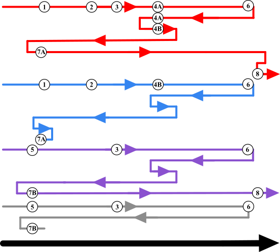
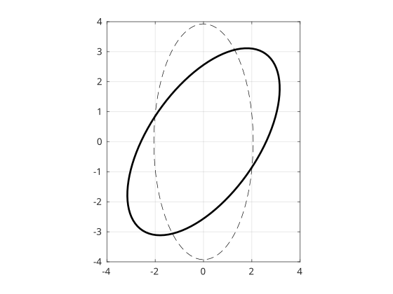

Andrew's Notes
I'm a bit of a meticulous note taker--in part because it helps me retain information that is meaningful to me, and also because it provides an avenue for fleshing out ideas. I like to keep my notes on a wiki-style website for ease-of-access on my computer and mobile devices. While the vast majority of these notes are password-protected, occasionally I polish some notes to make publicly available. Below are my publicly published notes and articles on technical and non-technical topics.
- Tenet Timelines
- Recipes
- Money Balancing Math
- Philosophy Essays
- Software Runbooks
- Autonomy
Tenet Timelines
The movie Tenet makes use of nonlinear storytelling in its purest form: the main characters literally “zig-zag” through time within the bounds of a two-week period, as illustrated in the “stacked timeline” below. This is my attempt to make sense of the timelines as well as some of the essential mechanics of the storyline after an initial viewing. The timeline below is by no means precise (hence no metric indicators on the time axis), but I do believe that the shapes are basically correct.

Timeline Legend
- Red: The Protagonist’s (John David Washington) Timeline
- Blue: Neil’s (Robert Pattinson) Timeline
- Purple: Kat’s (Elizabeth Debicki) Timeline
- Gray: Andrei Sator’s (Kenneth Branagh) Timeline
- Black: The Universe’s (i.e., laws of physics) Timeline
- Labeled Circles: Key Movie Events (see below)
Key Movie Events
- The opera house in Kiev is sieged. The Protagonist is unwittingly saved by Neil, who sports his backpack with red lanyard attached (face not seen).
- The Protagonist and Neil break into the penthouse suite in India by bungee jumping, and learn of Sator, who is communicating somehow with the future.
- The Protagonist meets Kat and Sator in London, and agrees to steal plutonium for Sator.
- Neil and the Protagonist break into the Norwegian vault by crashing a plane into it, and are met by a mysterious masked character: (A) The protagonist fights with the mysterious figure, who is actually himself traveling backwards through time. (B) Neil simultaneously struggles with the Protagonist who has flipped back to going forwards in time, then realizes who he is, causing him to warn the current version of the Protagonist to not inadvertently kill himself by killing the mysterious figure.
- (Told in flashback by Kat) Sator and Kat have a massive fight on a yacht in Vietnam when Sator offers to stop blackmailing her if she agrees to never see her son again.
- The Protagonist and Neil steal the plutonium (which actually turns out to be the last piece needed to assemble The Algorithm) and are tricked/manipulated by Sator to give it up, especially when Kat’s life is threatened with a gunshot wound and radiation exposure.
- The climax events of the movie: (A) The Protagonist and Neil take part in a huge offensive to take hold of The Algorithm before the bad guys can set off a homing beacon, alerting the enemies in the future to where it is so that they can set it off, destroying the past. In a final act of heroism which we see from The Protagonist’s perspective (but actually is carried out after their final exchange, offscreen), Neil descends into the hole where The Algorithm is so that he can unlock the gate and take a bullet for The Protagonist. Once again, the lanyard on the backpack gives this fact away. (B) Simultaneously, Kat and Sator have returned to Vietnam to relive an important moment alluded to earlier. Sator wants to have one last enjoyable moment before telling his henchmen to set the homing beacon for The Algorithm. He thinks he’s interacting with the Kat from the original event, whereas the Kat who has been experiencing all the events of this movie up to this point has actually snuck onto the Yacht, and her mission is to have him die without it setting off the homing beacon.
- After the film’s resolution, The Protagonist saves Kat from being killed off as a loose end. As a rule of the Tenet organization (to be founded by The Protagonist in the future), all who see The Algorithm must be killed off at some point (hence the cyanide pill test at the beginning of the movie for those who would be admitted to the program—they need to demonstrate that they are willing to die for a good cause) so that they can’t be interrogated in the future and reveal the location of The Algorithm in the past. The Protagonist violates his own organization’s rules by saving her, and the two of them become the only main characters to live beyond the events of the movie.
Notes
- To understand the implications of the zig-zagged timelines, you have to take them at face value, which is to say that for much of the movie, there are other “copies” of the main characters going around doing things which you don’t know about. For example, around the same point in time corresponding to (1) on the timeline, there’s one copy of The Protagonist and Neil at the opera house, but at the same point in time, there are two copies of The Protagonist and three copies of Neil, all running around the place where the climactic battle for The Algorithm happened. Similarly, around the time of (4), there were five different copies of The Protagonist running around, with three of them within just a few feet of each other in that Norwegian vault.
- You don’t have to think too hard about this to see where issues of free will might come up, as they mention at the start of the movie (e.g., “If I see my future inverted self do \(\chi\), then can I just choose to do \(\mathcal{Y}\) instead? In that case, why did I see my future self do \(\chi\)?”) The movie kind of brushes this off with the phrase “what’s done is done” as well as what seems like a pseudo-compatibilist philosophical argument, but that would be fun to discuss beyond the scope of these notes.
- It also follows from the zig-zag timeline lengths that while the entire movie takes place within the span of about two weeks, the different main characters age different amounts during this time. For example, The Protagonist appears to age about six weeks during the course of the film, whereas Sator only experiences/ages about four weeks’ time.
- Alongside the bi-directional, piecewise main character timelines, it may seem trivial to include the linear universal timeline at the bottom. However, it’s actually really important to think of each character’s timeline in terms of how it relates to the universal timeline. For example, in the movie, they claim that inverted people will experience physics (e.g., friction, sounds, heat transfer, etc.) in a backwards, counter-intuitive manner. But, if the universal timeline were pointing to the left instead of to the right (that is, if the universe itself were inverted), then it would be the opposite—those moving forward in time would be the ones experiencing the weird physics (The notion of inverted heat transfer, etc. as a result of inverted entropy/time perception is a bit bogus, but still a cool idea for the film)!
- This is what the nameless enemies of the future wanted to accomplish by activating The Algorithm; they wanted to reverse the direction of the universal timeline so that the people of the future could travel in the other direction, back to a time before the Earth was ruined by human mismanagement.
- Now imagine the universal timeline reversing direction, zig-zagging like the main character timelines. In the movie, they claimed that touching your alternate, inverted self (without a protective suit on) would result in your spatial-temporal annihilation. If the whole universe inverted, then everything would fold back on itself for just this sort of annihilation, spelling catastrophe for anything to the left of the universal folding point and presumably leaving an empty space for the future to occupy in their newly-inverted timeline.
All in all, very cool movie! For me, it wasn’t quite as emotionally fulfilling as most of Nolan’s other films, but was still a blast in its own right.
Recipes
Instant Pot cooking times cheatsheet
45 Beginner Instant Pot Recipes
Breakfast
Pancakes from Scratch
- 1 \(\frac{1}{2}\) cups all-purpose flour
- 3 \(\frac{1}{2}\) teaspoons baking powder
- 1 teaspoon salt
- 1 tablespoon white sugar
- 1 \(\frac{1}{4}\) cups milk
- 1 egg
- 3 tablespoons butter, melted
- In a large bowl, sift together the flour, baking powder, salt, and sugar.
- Make a well in the center and pour in the milk, egg, and melted butter; mix until smooth.
- Make the pancakes with \(\frac{1}{4}\)-cup scoops; should be nice and fluffy!
French Toast Roll-Ups
- 8 slices of white sandwich bread
- Filling (one or the other):
- softened cream cheese & diced strawberries
- Nutella and banana slices
- 2 eggs
- 3 tablespoons of milk
- \(\frac{1}{3}\) cup of granulated sugar
- 1 heaping teaspoon of ground cinnamon
- butter for greasing the pan
- Cut the crust off of each slice of bread, flatten them out with a rolling pin
- Place 1-2 teaspoons of filling 1 inch from one end of the bread in a strip, and roll up tightly
- In a shallow bowl, whisk the eggs and milk until well combined
- In another shallow bowl, mix the sugar and cinammon
- Melt a tablespoon of butter on a skillet over medium heat
- Dip each roll in the egg mixture, then place on skillet seam-side down
- Cook in batches until golden brown, turning to cook and brown on all sides (\(\approx\) 2 minutes per side). Butter the pan as needed
- Once cooked, roll the rolls immediately in the cinnamon-sugar mixture, then set aside for serving
Antojitos
Guacamole
Single-person version: use 1 avocado.
- 3 ripe avocados
- 1 lime
- \(<1\) teaspoons of minced garlic
- 1 large pinch of salt
- (little bit of) cilantro
- (little bit of) chopped onion
- 1 pinch of cumin
- Place peeled avocado into a medium-sized bowl.
- Cut the lime in half and squeeze both halves into the bowl.
- Add garlic, salt, cilantro, onion, and cumin.
- Mash the avocados with a fork and mix everything together evenly.
5-Layer Dip
Add some additional excitement to your guacamole.
- Refried beans
- Guacamole
- Sour cream
- Taco seasoning
- Salsa
- Shredded cheese
- Chopped Cilantro
- Mix sour cream with taco seasoning.
- In a 9-inch dish, layer bottom-to-top:
- Refried beans
- Guacamole
- Taco-spiced sour cream
- Salsa
- Top with shredded cheese.
- Garnish with chopped cilantro.
- Serve with tortilla chips or cover/refrigerate immediately!
(Almost) Kane's Sauce
Makes enough for one oven-full of chicken.
- \(\frac{1}{2}\) cup of mayo
- \(\frac{1}{4}\) cup of ketchup
- 1 tsp of worcestershire sauce
- \(\frac{1}{2}\) tsp of black pepper
- \(\frac{1}{2}\) tsp of garlic salt OR \(\frac{3}{8}\) tsp of salt and \(\frac{1}{8}\) tsp of garlic powder
- Mix all the ingredients together.
Garlic Parmesan Roasted Broccoli
Makes great dinner side. Makes 6 servings. Prep 5 min., cook 10 min.
- 5 Cups (24 oz) of Broccoli Florets
- 3 Tablespoons of Olive Oil
- 2 Teaspoons of Minced Garlic
- Salt and Pepper
- \(\frac{1}{4}\) Cup of Parmesan
- Juice of 1 Lemon
- Preheat oven to 425\(^\circ\) F. Lightly oil a baking sheet or coat with nonstick spray.
- Place broccoli florets in a single layer onto the prepared baking sheet. Add olive oil and garlic; season with salt and pepper, to taste. Gently toss to combine.
- Place into oven and bake for 10-12 minutes, or until tender.
- Serve immediately, sprinkled with Parmesan and lemon juice.
Dinner
Taco Soup (Chili)
- 1 can of black beans
- 1 can of kidney beans
- 2 cans of petite diced tomatoes
- 1 can of corn
- 1 packet of ranch mix
- 1 packet of taco mix
- 1 pound of ground beef
- In the bottom of a large pot, cook the meat fully.
- Drain all cans except for the tomatoes, and empty all cans in the pot.
- Add up to 1 can of water, for desired consistency.
- Heat everything up, then serve.
Mashed Potatoes (Instant Pot)
- 1 pound of baby yellow, gold, or red potatoes (gold preferred)
- \(\frac{1}{2}\) cup of water, or vegetable/chicken broth for more flavor
- 2 tablespoons of butter
- 1-2 cloves of minced garlic (optional)
- \(\frac{1}{4}\) to \(\frac{1}{2}\) teaspoons of salt
- \(\frac{1}{4}\) to \(\frac{1}{2}\) teaspoons of black pepper
- 2-4 tablespoons of milk
- fresh parsley (optional)
- Peel the potatoes and cut into \(\approx\) 1-inch uniform chunks.
- Place chunks and the water/broth in the instant pot and cook on HIGH pressure for 5 minutes. Release the pressure valve as soon as the 5 minutes are up.
- Check on the potatoes to make sure they're soft and easy to mash. If not, then put the lid back on and "keep warm" for 5-10 minutes more.
- With the water still in the pot, use a potato masher or large fork to mash the potatoes halfway to the consistency that you want.
- Add the butter, optional garlic, and salt/pepper.
- Mash the potatoes the rest of the way to their desired consistency.
- Use the milk to thin out the potatoes, if needed.
- Serve hot, and garnish with parsley if you want. Leftovers can be stored in the refrigerator for 3-4 days.
Beef Stew (Instant Pot)
- \(1 \frac{1}{2}\) Pounds of Beef Stew Meat
- 1 Tablespoon of Olive Oil
- 1 Teaspoon of Salt
- 1 Teaspoon of Pepper
- 1 Teaspoon of Italian Seasoning
- 2 Tablespoons of Worcestershire Sauce
- 3 Cloves of Minced Garlic
- 1 Large, Chopped Onion
- \(1\times 16\)-oz Bag of Baby Carrots (cut into slices)
- 1 Pound of Cubed Potatoes
- \(2 \frac{1}{2}\) Cups of Beef Broth
- \(1\times 10\)-oz Can of Tomato Sauce
- 2 Tablespoons of Cornstarch
- 2 Tablespoons of Water
- Add the olive oil to the instant pot and turn on the saute function. When the oil starts to sizzle, add the meat and season with the salt, pepper, and Italian seasoning.
- Cook the meat until Browned on all sides.
- Add the beef broth to the instant pot and use a spoon to scrape the brown bits from the bottom of the pan.
- Add the Worcestershire sauce, garlic, onion, carrots, potatoes, and tomato sauce.
- Close the lid and steam valve on the instant pot.
- Cook on high pressure for 35 minutes, then allow the pressure to release naturally for 10 minutes before doing a quick release.
- Mix together the cornstarch and cold water in a small bowl and stir into the stew while it's still piping hot until thickened.
Taco Soup
- 1 can black beans
- 1 can kidney beans
- 2 cans petite diced tomatoes
- 1 can corn
- 1 packet of ranch mix
- 1 packet of taco mix
- 1 lb of ground beef
- Cook the beef separately.
- Drain all cans.
- Put everything in a pot. Add 1 can of water if you want a more soup-ey consistency.
- Heat up.
- Add anything you want in it:
- chips
- avocado
- sour cream
- etc.
Barbecue Chicken Pizza Bagels
- Plain white bagels, sliced
- 1 Chicken breast
- BBQ sauce (like Sweet Baby Ray's)
- Lots of grated mozzarella
- Diced red onion
- Cook, then cube the chicken
- Preheat oven to 425\(^\circ\)
- Layer on each bagel slice in following order, starting from the bottom:
- Chicken
- BBQ sauce
- Mozzarella
- Onion
- Bake in oven for \(\approx\) 10-15 minutes, until cheese is melted.
Buffalo Dip
- \(\frac{3}{4}\) cup of Frank buffalo hot sauce
- 1 cup of ranch dressing
- 16-oz of softened cream cheese
- 2 cans of canned chicken (drained)
- 2 cups of shredded cheddar cheese
- Preheat oven to 350\(^\circ\)
- Drain chicken and mix with hot sauce
- In a separate bowl, mix the ranch and cream cheese
- Mix everything together
- Grease the bottom of a small, square pan.
- Pour mixture into pan, then sprinkle cheddar cheese on top
- Bake for 25 minutes.
White Chicken Chili (Crockpot)
Single recipe serves 5+.
- 2 frozen (or fresh) boneless chicken breasts
- 1 can of corn
- 1 can of black beans
- \(1\times 10\)-oz can of “original” or “mild” Rotel tomatoes
- 1 package of Hidden Valley ranch dressing mix (1-oz size)
- 1 teaspoon of cumin
- 1 teaspoon of chili powder
- 1 teaspoon of onion powder
- \(1\times 8\)-oz block of cream cheese
- Get out your crockpot
- Place the chicken at the bottom
- Mix in the corn (undrained), black beans (drained), tomatoes, and mix/powders
- Place cream cheese on top
- Cook on low for 4 hours, but 3 hours in, remove the chicken to break it up before placing it back in and mixing up the cream cheese
- Serve over rice or with tortilla chips!
White Chicken Chili (Instant Pot)
Serves 8 people. 30 min prep + 20 min cook.
- 2 large thawed chicken breasts
- 1 can of corn
- 1 can of black beans
- \(1\times 10\)-oz can of “original” or “mild” Rotel tomatoes
- 1 package of Hidden Valley ranch dressing mix (1-oz size)
- 1 teaspoon of cumin
- 1 teaspoon of chili powder
- 1 teaspoon of onion powder
- \(1\times 8\)-oz block of cream cheese
- \(\frac{1}{2}\) cup of chicken broth or stock
- Place ingredients in the instant pot bowl in this order:
- chicken
- beans
- corn
- tomatoes
- broth
- Add the spices and powders.
- Stir everything together; make sure some juice gets underneath the chicken to prevent scorching.
- Slice the cream cheese into six large pieces and place over the top.
- Cook on high pressure for 20 minutes.
- Depressurize for 10 minutes, then turn the valve to the venting position.
- Remove and shred the chicken breasts, then return them to the pot and stir everything together, melting the cream cheese.
- Serve over rice or with tortilla chips!
Creamy Macaroni and Cheese
Makes 6 servings. Prep 20 min., cook 15 min., bake 20 min.
- 1 (8-oz) package of elbow macaroni
- \(\frac{1}{4}\) cup of butter or margarine
- \(\frac{1}{4}\) cup of all-purpose flour
- \(\frac{1}{4}\) teaspoon of salt
- \(\frac{1}{4}\) teaspoon of ground black pepper
- \(\frac{1}{8}\) teaspoon of ground red pepper
- \(\frac{1}{8}\) teaspoon of granulated garlic
- 1 cup of half-and-half
- 1 cup of milk
- \(\frac{1}{2}\) (10-oz) block of extra-sharp Cheddar cheese, shredded
- 1 (10-oz) block of sharp Cheddar cheese, shredded and divided
- Prepare pasta according to package directions; drain and set aside
- Preheat oven to 375\(^\circ\)
- Melt butter in a large skillet over medium-high heat. Gradually whisk in flour until smooth; cook, whisking constantly, 2 minutes. Stir in salt and next 3 ingredients. Gradually whisk in half-and-half and milk; cook, whisking constantly, 8-10 minutes or until thickened.
- Stir in extra-sharp cheese and half of sharp cheese until smooth. Remove from heat.
- Combine pasta and cheese mixture and pour into 6 lightly greased (6-oz) ramekins or 1 (8 in\(^2\)) baking dish. Sprinkle evenly with remaining sharp Cheddar cheese.
- Bake for 20 minutes. Optionally add 15 minutes for a crusty top.
Pasta Bolognese
4 servings.
- 2 tablespoons of butter
- \(\frac{1}{4}\) pound of sliced bacon, cut crosswise into \(\frac{1}{4}\)-inch strips
- 1 onion, finely chopped
- 1 pound of ground beef
- 1 cup of canned low-sodium beef or chicken broth
- \(\frac{1}{2}\) cup of dry white wine (or apple cider vinegar)
- 2 tablespoons of tomato paste
- \(\frac{1}{2}\) teaspoon of dried oregano
- \(\frac{3}{4}\) teaspoon of salt
- \(\frac{1}{4}\) teaspoon of fresh-ground black pepper
- \(\frac{1}{2}\) cup of heavy cream
- 1 pound of spaghetti
- 2 tablespoons of chopped fresh parsley (optional)
- In a large frying pan, heat butter and bacon over moderately low heat, until bacon renders some of its fat (\(>3\) minutes)
- Add onion and stir occasionally until starting to soften (\(>3\) minutes)
- Stir in ground beef and cook until meat no longer pink (\(\approx 2\) minutes)
- Add broth, wine, tomato paste, oregano, salt, pepper
- Simmer on very low heat, stirring occasionally, until sauce thickens (\(\approx 1\) hour)
- When ready to serve, stir in cream and remove from heat
- In large pot of boiling, salted water, cook spaghetti until just done (\(\approx 12\) minutes)
- Drain and toss with sauce and parsley
Super Simple Salmon
- 1 tablespoon of garlic powder
- 1 tablespoon of dried basil leaves
- \(\frac{1}{2}\) teaspoon of table salt
- \(4\times 6\)-oz salmon
- 2 tablespoons of salted butter
- 4 raw lemon wedges
- Stir garlic powder, basil, and salt in a small bowl
- Rub the powder mix in equal amounts onto the salmon fillets
- Melt butter in skillet over medium heat
- Cook the salmon in the butter until browned and flaky (about 5 minutes per side)
- Serve each salmon piece with a lemon wedge
Filet Mignon
For one piece of meat:
- \(1\times 6\)-oz filet mignon
- coarse salt to taste
- freshly ground black pepper to taste
- 1 tablespoon of grapeseed oil\(^*\)
- 2 tablespoons of unsalted butter
- 2 sprigs of fresh rosemary
- 1 clove of garlic
\(^*\)You can substitute in another high-heat, neutral oil of choice.
- On a cutting board, pat the filet dry with paper towels and let sit at room temperature for 20-30 minutes
- Preheat oven to 450\(^\circ\)
- Generously season all sides of the filet with salt and pepper
- Heat a medium, oven-safe stainless steel or cast iron skillet over high heat for 5 minutes and add the oil
- Once the oil begins to smoke, add the filet to the pan. Cook without moving for 2–3 minutes, until a crust has formed
- Use tongs to flip the steak over, then add the butter, rosemary, and garlic to the pan
- Tilt the pan and spoon the butter continuously over the steak for 2-3 minutes
- Transfer the pan to the oven for 7 minutes for a medium rare steak
- Transfer the steak to a cutting board and let rest for at least 10 minutes before slicing
Fish Tacos
- 1 pound of lean white fish fillets (like tilapia)
- Salt
- Black pepper
- Lime juice
- 2 tablespoons of vegetable or canola oil
- 1 clove of minced garlic
- 1 \(\frac{1}{2}\) teaspoons of chili powder
- 1 \(\frac{1}{2}\) teaspoons of ground cumin
- \(\frac{1}{2}\) teaspoon of paprika
- Flour tortillas
- \(\frac{1}{2}\) cup of sour cream
- \(\frac{1}{3}\) cup of mayonnaise
- \(\frac{1}{2}\) teaspoon of garlic powder
- 1 teaspoon of buffalo sauce
- shredded cheese
- shredded lettuce
- avocado
- Season the fish with a little salt and pepper on both sides
- In a mixing bowl, whisk together the oil, some lime juice, garlic, chili powder, cumin (1 teaspoon), and paprika
- Place fish and mixed marinade in a large ziplock bag, seal, and let sit in the fridge for 20-30 minutes
- Meanwhile, make the sauce with the sour cream, mayonnaise, some lime juice, garlic powder, cumin (1/2 teaspoon), salt (1/4 teaspoon), and buffalo sauce. Mix well and place in the fridge.
- Preheat grill to medium-high heat. Grill fish filets for about 3-4 minutes on each side, flipping only once.
- Warm up tortillas, gather everything together, and enjoy!
Dessert
Chocolate Chip Cookies
- 1 cup of softened butter
- 1 cup of white sugar
- 1 cup of brown sugar
- 2 eggs
- 2 teaspoons of vanilla
- \(2~\frac{1}{2}\) cups of flour\(^*\)
- 1 teaspoon of baking soda
- 1 teaspoon of salt
- 2 cups of chocolate chips
\(^*\) If you don’t double the recipe, a little bit of extra flour (like a couple of tablespoons) might be needed if the cookies seem too thin.
- Preheat oven to 350\(^\circ\)
- Mix the butter, white sugar, and brown sugar in a large bowl
- Mix in eggs and vanilla
- Mix in flour, baking soda, and salt
- Add the chocolate chips
- Use cookie scoop to place round, even amounts on the cookie sheet(s)
- Bake (top rack) for (8-10 minutes? Definitely 12 if you’re doubling)
Air Fried Oreos
- 1 package of 8-count Pillsbury “Crescents” croissants
- 1 package of oreos
- Powdered sugar
- Cut croissant rolls (laid flat) in half so they form squares
- Wrap oreos on croissant squares
- Place oreos in air fryer: 5-6 minutes at 320\(^\circ\) (until they are golden brown)
- Sprinkle powdered sugar on your now beignet-like oreos!
Super Simple Peanut Butter Cookies
- 1 cup of peanut butter
- 1 cup of sugar
- 1 egg
- Preheat oven to 350\(^\circ\)
- Mix all ingredients in bowl
- Bake for :::6-8 minutes?:::
Normal Peanut Butter Cookies
Yield: 24 cookies. Prep: 15 min. + 1 hr. Cook: 10 min.
- 1 cup of butter
- 1 cup of peanut butter
- 1 cup of white sugar
- 1 cup of brown sugar
- 2 eggs
- \(2\frac{1}{2}\) cups of flour
- 1 teaspoon of baking powder
- \(\frac{1}{2}\) teaspoon of salt
- \(1\frac{1}{2}\) teaspoons of baking soda
- In a bowl, cream the butter, peanut butter, and sugars. Beat in eggs.
- In a separate bowl, sift flour, baking powder, baking soda, and salt.
- Stir the two bowl contents into each other, then place in the fridge for 1 hour.
- Preheat oven to \(375^\circ\).
- Place refrigerated dough balls on cookie sheets and bake for about 10 minutes or until they start to brown.
Brazo Gitano (Swiss Roll)
- 1 cup of sugar
- 1 cup of flour (i.e. harina presto)
- 3 eggs
- 3 tablespoons of water
- \(\frac{1}{2}\) can of dulce de leche
- Preheat oven to 350\(^\circ\)
- Separate egg yolks from egg whites into separate bowls
- Whisk egg whites to the point of foaming
- Add sugar to the yolk, then mix together
- Add flour to the yolk mixture
- Add water to flour-yolk mixture and mix
- Fold egg whites into yolk mixture
- Place parchment paper on cookie sheet, and pour a handful of sugar over it
- Pour the batter evenly on the parchment paper
- Bake for 10 minutes (avoid the urge to open the door a bunch of times)
- Remove from oven and let cool for 5 minutes
- Pour dulce de leche over the bread
- Detach bread from parchment paper at the edge and begin rolling it up longways
- Pour powdered sugar on top
- Slice it up and enjoy!
Tres Leches Cake
Cake
- 1 box of Pillsbury (1 lb 2.25-oz) yellow cake mix with pudding
- 1 cup of water
- \(\frac{1}{3}\) cup of vegetable oil
- 3 eggs Sauce
- 1 cup of whipping cream
- 1 (14-oz) can of sweetened condensed milk (not evaporated)
- 1 (12-oz) can of evaporated milk Topping
- 1 cup of whipping cream
- \(\frac{1}{4}\) teaspoon of vanilla extract
- Preheat oven to 350\(^\circ\)
- Grease a \(13\times 9\) in. (3-quart) glass baking dish
- In a large bowl, beat cake mix, water, oil, and eggs with electric mixer on low speed (\(\approx 30\) seconds) until blended. Then beat on medium speed for 2 minutes.
- Pour batter into baking dish
- Bake 20 minutes or until toothpick inserted in center comes out with crumbs
- In a large bowl, mix sauce ingredients
- Using long-tined fork, pierce hot cake in baking dish every 1 to 2 inches
- Slowly pour sauce mixture over cake
- Refrigerate cake at least 3 hours to chill (cake will absorb most of sauce mixture)
Before serving:
- In a small bowl, beat whipping cream until stiff peaks form
- Stir in vanilla
- Spread over cold cake
- Cover and refrigerate
Turtles
- 48 caramels
- \(\frac{1}{2}\) cup of cream (heavy or whipping)
- \(1~\frac{1}{2}\) cups of flour
- \(1~\frac{1}{4}\) cups of brown sugar
- \(1~\frac{1}{4}\) cups of melted butter
- \(\frac{1}{4}\) teaspoon of salt
- \(\frac{2}{3}\) teaspoon of baking soda
- \(1~\frac{1}{2}\) cup of oatmeal
- A 6-oz package of chocolate chips
- Preheat oven to 350\(^\circ\)
- Melt caramels and cream in a double broiler
- Separately combine remaining ingredients (except chocolate chips) and press half of the mixture into a \(13\times9\) cake pan
- Bake for 10 minutes
- Remove from oven and sprinkle chocolate chips over it
- Pour hot caramel sauce over chips
- Add remaining oatmeal mixture
- Finish baking for 15 minutes
- Cool and cut into squares
Cowboy Cookies
- 2 cups of brown sugar
- 2 cups of sugar
- 2 cups of shortening/butter
- 4 eggs
- 2 teaspoons of vanilla
- 1 large package of chocolate chips
- 4 cups of regular oatmeal
- 4 cups of flour
- 1 teaspoon of salt
- 1 teaspoon of baking powder
- 2 teaspoons of baking soda
- Preheat oven to 350\(^\circ\)
- Mix all ingredients together in Bosch mixer
- Drop by spoonfuls on a greased cookie sheet
- Bake for 10 minutes
Mocktails
Virgin Piña Colada
Creamy and refreshing. Makes 6 cups.
- 1 cup of pineapple chunks
- 1 can of coconut cream
- 1 cup of pineapple juice
- \(\frac{1}{2}\) cup of sweetened condensed milk
- Ice
- (Optional) Whipped cream and cherries
- Blend all the required ingredients together to get a slushy-like consistency
- Top with whipped cream and cherries if desired!
Quick Stats
Instant Pot
Rice
| Rice Type | Rice Cups | Water Cups | High Pressure Min. | Natural Release Min. |
|---|---|---|---|---|
| Jasmine | 1.5 | 2 | 6 | 10 |
Air Fryer
- Trader Joe’s Hash Browns: 390F for 10 minutes
- Polish dogs:
- 400F
- 3-6 minutes (depending on quantity), turn once
- Add in buns for the last 30-45 seconds
- For crispier hot dogs: 8 minutes with the buns in for the last 3 minutes
- Chicken breasts
- 375 F
- Marinated, diced Costco chicken: 17 minutes (9 + 4 + 4)
- Small (5 to 7 ounces): 7 to 10 minutes
- Medium (8 to 10 ounces): 10 to 12 minutes
- Large (11 ounces or more): 12 to 16 minutes
- flip halfway
Money Balancing Math
Occasionally situations arise where multiple parties are paying different amounts for various "shared" items (could be dishes for a dinner, or groceries and meals for a vacation) and at the end everyone wants to make sure that no one party paid more than everyone else. I'll refer to these situations as the "money balancing" problem, which can be stated more precisely as follows:
The Money Balancing Problem
Given \(n\) parties that have paid \(c_1,c_2,\cdots,c_n\) amounts toward a shared fund with a mean value of \(\mu\triangleq \sum_i{c_i}/n\), determine the minimal exchanging of funds that must occur between parties after the fact to ensure that \(c_i\rightarrow\mu\) for all \(i\).
For small party sizes, the solutions to this problem are pretty intuitive (I'll explain why that is). Some illustrative examples:
Example: (\(n=2\))
- Party 1 pays $20
- Party 2 pays $10
The mean amount is $15, and to make everyone whole Party 2 must pay Party 1 $5.
Example: (\(n=3\))
- Party 1 pays $4
- Party 2 pays $5
- Party 3 pays $6
The mean amount is $5, and to make everyone whole Party 1 must pay Party 3 $1. Part 2 doesn't have to do anything.
The above examples with \(n<4\) are quick to reason through to get to the minimal list of needed transactions to make everyone whole. This is because of a convenient fact: that no matter how large \(n\) is, the total amount that was paid above the mean \(\mu\) is perfectly balanced by the total amount that was paid below the mean. In case that fact isn't intuitive to you, see the proof below.
Proof
\(\sum_i{\left(\mu-x_i\right)}\)
\(=\sum_i{\left(\left(\frac{1}{n}\sum_j{x_j}\right)-x_i\right)}\)
\(=n\sum_i{\left(\left(\sum_j{x_j}\right)-nx_i\right)}\)
\(=n\left(n\sum_i{x_i}-n\sum_i{x_i}\right)\)
\(=0\)
Thus, when \(n<4\), there is a finite amount of cases to consider, each with an obvious optimal solution:
- \(n=2\)
- Case 1: \(x_1=x_2=\mu\) \(\rightarrow\) No one does anything.
- Case 2: \(x_1<\mu,x_2>\mu\) \(\rightarrow\) Party 1 pays Party 2 exactly \(\mu-x_1\).
- \(n=3\)
- Case 1: \(x_1=x_2=x_3=\mu\) \(\rightarrow\) No one does anything.
- Case 2: \(x_1<\mu,x_2<\mu,x_3>\mu\) \(\rightarrow\) Party 1 pays Party 3 \(\mu-x_1\) and Party 2 pays Party 3 \(\mu-x_2\).
- Case 3: \(x_1<\mu,x_2=\mu,x_3>\mu\) \(\rightarrow\) Party 1 pays Party 3 \(\mu-x_1\).
- Case 4: \(x_1<\mu,x_2>\mu,x_3>\mu\) \(\rightarrow\) Party 1 pays Party 2 \(\mu-x_2\) and pays Party 3 \(\mu-x_3\).
It's when \(n>=4\) that things start to get a little hairier, since now we open ourselves to the possibility of simultaneously having multiple people pay below and above the mean. In that case, there are now an infinite number of a posteriori transactions that could take place to make each other whole, but we'd like to know the optimal set of transactions that entails a minimal amount of money exchanging hands.
A neat visualization of this optimal solution is to picture \(n\) water columns with different heights, initially segregated from each other (imagine connecting pipes with negligible cross-sectional area) by closed valves. Once the valves open, the water will auto-distribute itself to make it so that all the column heights regress to the mean. And if the connecting pipes have a small enough cross-section, then the inter-column transfer will be slow enough that the water will seamlessly transfer between columns in an optimal fashion such that no unnecessary water molecules are moved:

The same effect can be achieved for arbitrary values of \(n\) by formulating a constrained linear program where we minimize the sum of all balancing a posteriori transactions and constrain each party sum (i.e., initial amounts spent \(x_i\) plus any balancing transactions for each respective party) to be equal to \(\mu\). Since computers can solve linear programs in their sleep, here's a Python script that will:
- Prompt you for party info and how much they spent toward the "shared fund."
- Formulate and solve the linear program from the info you provided.
- Report the results in a human-understandable fashion.
import numpy as np
from scipy.optimize import linprog
party_names = []
party_expenses = []
# Get party info
n = 0
while True:
party_name = input(f"Enter the name of Party {n+1} (ENTER to stop adding parties): ")
if not party_name:
break
n += 1
party_expense = None
while party_expense is None:
try:
party_expense = float(input(f"Enter total expense amount of Party {n}: "))
except:
print("Must enter a valid, positive floating-point number.")
if party_expense <= 0:
print("Must enter a valid, positive floating-point number.")
party_expense = None
party_names.append(party_name)
party_expenses.append(party_expense)
if n <= 1:
print("Must input more than one party.")
exit()
# Formulate and solve linear program
b_p = np.array(party_expenses)
mu = np.mean(b_p)
b_eq = mu - b_p[:-1]
m = n * (n - 1)
m2 = int(m / 2)
b_ub = np.zeros(m)
indices = [(source, sink) for source in range(n) for sink in range(n) if source > sink]
c = np.zeros(m)
for i in range(m2):
c[m2 + i] = 1.0
A_eq = np.zeros((n - 1, m))
for i in range(n - 1):
for j, (source, sink) in enumerate(indices):
if source == i:
A_eq[i, j] = -1
elif sink == i:
A_eq[i, j] = 1
A_ub = np.zeros((m, m))
for i in range(m2):
A_ub[2 * i, i] = 1.0
A_ub[2 * i, m2 + i] = -1.0
A_ub[2 * i + 1, i] = -1.0
A_ub[2 * i + 1, m2 + i] = -1.0
x_bounds = []
for i in range(m2):
x_bounds.append((None, None))
for i in range(m2):
x_bounds.append((0, None))
res = linprog(c, A_eq=A_eq, b_eq=b_eq, A_ub=A_ub, b_ub=b_ub, bounds=x_bounds)
# Interpret and report results
print("----")
for i in range(m2):
amount = round(res.x[i], 2)
if abs(amount) >= 0.01:
source, sink = indices[i]
if amount > 0:
print(f"{party_names[sink]} should pay {party_names[source]} ${amount:.2f}.")
else:
print(f"{party_names[source]} should pay {party_names[sink]} ${-amount:.2f}.")
Here's an example run of the above program with user inputs from \(n=5\):
Enter the name of Party 1 (ENTER to stop adding parties): Jerry
Enter total expense amount of Party 1: 9.20
Enter the name of Party 2 (ENTER to stop adding parties): Joe
Enter total expense amount of Party 2: 10.12
Enter the name of Party 3 (ENTER to stop adding parties): John
Enter total expense amount of Party 3: 2.30
Enter the name of Party 4 (ENTER to stop adding parties): Jeff
Enter total expense amount of Party 4: 3.55
Enter the name of Party 5 (ENTER to stop adding parties): Jim
Enter total expense amount of Party 5: 7.89
Enter the name of Party 6 (ENTER to stop adding parties):
----
John should pay Jerry $1.43.
John should pay Joe $2.26.
Jeff should pay Jerry $1.16.
Jeff should pay Joe $1.25.
John should pay Jim $0.62.
Jeff should pay Jim $0.66.
Philosophy Essays
Thomas Aquinas on Reason and Revelation
The question of reconciling faith with reason and science is one that is relevant to many, including myself. Aquinas offers some early thoughts on addressing this question. Some of his notions are perhaps outdated, but nevertheless serve as one of many decent starting points for organized thought on the issue.
For much of the Medieval era, the theoretical sciences, as championed anciently by Aristotle, are popularly seen as being either in direct conflict with or extremely subservient to the study of the word of God as it is revealed by canonized scripture. The theoretical sciences entail the pursuit of all truth through reason, and the prevailing Augustinian view is that the only worthwhile use of reason falls within the domain of direct religious application all other intellectual pursuits are deemed superfluous and symptomatic of the lust of the eyes. This viewpoint can be characterized as faith seeking knowledge. St. Thomas Aquinas, who lives at a time when the writings of Aristotle have been revealed once again to western civilization as they are translated into Latin, offers a substantially different view of the pursuit of knowledge. His ideas champion the notion that revelation and the use of reason for the theoretical sciences are equally necessary in Gods plan for mankind. In contrast to the Augustinian model of faith seeking knowledge, Aquinas advocates for knowledge seeking faith. In spite of my finding the occasional lack of nuance in Aquinas conception of the relationship between reason and revelation, I sympathize much more strongly with his view than St. Augustine's, for it gives equal weight to the words and acts of God in a manner that is comprehensible, while granting fundamental importance to mankind's chief defining characteristic.
To justify the comparable significance of both reason and revelation, Aquinas addresses the concerns of those who extol reason and revelation as the supreme source of truth, respectively. This is not surprising, for the believer and the philosopher tend to harbor very different models of the universe. According to Aquinas, the philosopher thinks about creatures according to their proper natures, whereas the believer only concerns himself with how those creatures are related to God. Aquinas must bridge the gap between these two models. To do this, he must justify the usefulness of one model to those who espouse the other. He must also prove that the two epistemological models do not pose relative threats to one another, as would be the case in the Augustinian conception of a zero-sum game.
Aquinas justifies the use of revelation to the philosopher in part by distinguishing between two kinds of theology derived from revelation: positive and negative. Positive theology speaks to scriptural proclamations and demonstrations of what God has done, and these lend themselves to the examination of reason. For example, revelation reveals the nature of mankind, as well as what humanity must do to live in harmony with goodness. These principles can be reflected on by the philosopher, not falling outside the domain of reason. Moreover, the theologian may even turn to reason to find interrelations between divine principles and defend those principles against the accusation of being nonsense. One may ask: if positive theology can be traversed by the tools of reason, then what is the need of approaching such points from a theological point of view? In response to this question, Aquinas claims that diverse ways of knowing give rise to different sciences, appealing to the Aristotelian conception of coexisting domains of knowledge. If the astronomer and the philosopher can both come to the conclusion that the earth is round by different reasonable means, then positive theology can give rise to familiar conclusions with a perspective that still brings much needed insight.
A similar question may be posed: why should God rely on supernatural means to communicate knowledge which can be obtained by the senses? Aquinas answers this question by envisioning what the world would be like if there were no revelation. If God did not use revelation to reveal reasonable truths about His works, then few would ever come to possess a knowledge of God in this life. This is because most individuals do not pursue knowledge for its own sake, and many lack the resources, mental faculties, or freedom from mortal responsibilities necessary to dedicate time to such a monumental pursuit of knowledge. In addition, given the nature of human reason, which is subject to all manner of biases and false associations, it would be too easy for lies to become intermingled with truth were there no mediating force. It would be too difficult to dispel all the interspersed lies in the minds of the many, especially in the minds of those who are not well-versed in the process of demonstration. To counteract these unfortunate phenomena, Aquinas argues that the certitude which comes from faith is needed as a buttress to support reasons search for the knowledge of God. I agree with this sentiment, though for subtly different reasons. As the rational mind attempts to comprehend and attribute meaning to natural phenomena, it runs up against a large roadblock. The roadblock is the sheer volume of knowledge which can be attained in this life; how is one to know which objects of knowledge are more important to pursue? This problem is exacerbated by the deep separation which I believe exists between what is (that is, what can be observed through the senses) and what ought to be. In other words, I do not think there is any way to justifiably impose direction-giving meaning onto phenomena, using pure reason, without presupposing the existence of a particular narrative through which to view life. Pure demonstration cannot lead one to that which is not observable, including finding a purpose and source of all things in the universe. Thus, faith, inasmuch as it conforms to a coherent narrative about the purpose of creation and all things pertaining to it, acts as a guiding light in the pursuit of knowledge through reason.
To further justify the value of revelation to the philosopher, Aquinas must give a convincing argument that there can exist revealed truths whose full meaning defies all comprehension. These are truths which cannot be grasped by the senses, which, according to Aquinas, is because the senses are lower than He who created them, and something lower cannot comprehend what is higher unless a bridge is created by what is higher. For justification of this notion, Aquinas offers the premise that men are ordained by God to a purpose which extends beyond anything that can be experienced or thought of in this life. Thus, in order for mankind to be motivated to work toward such a lofty goal, mankind must first learn of the existence of such higher forms of being and knowing. I find nothing logically inconsistent in this argument. However, it is difficult for me to conceive of any fully satisfactory logical bridge between what is actionable (what can be done by man) and what is incomprehensible (the nature of God) that is useful for man's betterment. For man to be truly motivated, I believe that a more understandable God and gospel is needed no one can wholeheartedly love something of which one has no real conception. Partially addressing this line of reasoning, Aquinas offers the promise that an admittance that there are divine truths beyond human comprehension leads to a fomenting of intellectual humility. Knowing that God comprehends what man cannot, Aquinas argues, will counteract the disposition of many to put their own opinions in the highest regard, thus opening the door to improvement for the soul. I mostly agree with this point, though I also recognize that, historically, forcing reason to take a backseat to revelation in the name of pious humility has sometimes resulted in atrocities of varying degrees. I can only assume that Aquinas presupposes that every word revealed by God, fully comprehensible or not, will only inspire mankind to do good. After all, he claims that even the most imperfect knowledge about the most noble realities brings the greatest perfection of the soul. I cannot personally make such a sweeping statement.
There are still others who would claim that reason has no place in the face of divine revelation. Even among the strongest critics of reason, it is acknowledged that human beings are naturally seekers of knowledge a point raised anciently by Aristotle. The Augustinian view holds that everything which man does through the natural urges alienates him from God. Aquinas, in contrast, asserts that man has the ability to perform works which gradually become perfected by the grace of God, rather than destroyed. For Aquinas, man's ability to reason constitutes the works to be perfected, and faith is a gift of perfecting grace. Thus, the natural desire for knowledge is fundamentally tied to the natural desire for perfection. Perfection is defined as attaining the fullest form of what is naturally given. For example, humans do not naturally have wings, so flying is not included in the perfection of humans. The differentiating characteristic of humans is rationality, however, and the mind desires to be developed as a potential for perfection. In essence, man desires to acquire and be shaped by knowledge, just as matter desires to be shaped by form. I find this argument to be compelling, though I don't see anything barring one from using the same argument to justify the development of any arbitrary characteristic found to be unique to humans, such as the ability to formulate elaborate deceptions. That is, unless one could argue that the development of knowledge simultaneously diminishes ones desire for the development of other, less holy characteristics of the human condition.
An important idea in Aquinas conception of the relationship between reason and revelation is that reason can never truly oppose what is accepted on faith. One reason is that faith encompasses truths which lie beyond the senses, and reason cannot reach what is beyond the senses. I agree with this point, just as I think that what ought to be (constituting an unobservable ideal) cannot be derived directly from what is. Regarding truths accepted on faith which lie within the realm of the senses, Aquinas claims that the theoretical sciences cannot muster an opposing truth which is, at the same time, constrained to be the only possible conclusion. While this may often be the case, I do not believe that this argument holds for cases in which reason is able to uncover a logical inconsistency among the revealed truths themselves. Science, due to its conjectural nature, is unable to ever make definitive statements of truth. However, science can definitively reject theories which demonstrate internal inconsistencies; this is how progress is made within the sciences as bad explanations which make false predictions are soundly rejected.
If one is to accept the relative importance and relevance of both reason and revelation, then Aquinas offers a compelling picture of their roles within Gods plan for mankind. For Aquinas, viewing both reason and revelation through Aristotle's epistemological lens of demonstration, the major difference between reason-based philosophy and revelation-based theology is found in their principles, or starting points. The principles of philosophy are, to a certain extent, knowable through deep reflection as being self-evident. The principles of theology are based in faith, and cannot be learned through experience or pure reflection. By revelation, God is believed to be the first cause, and the movement of everything in the universe can be traced back to His design. The bridge between philosophy and theology is created after one first seeks to learn about the world through the senses, according to the order of knowing. Because mankind naturally desires knowledge, it will never cease searching until it has arrived at the first cause. Direction in the search is given by what has been given by revelation to be examined by reason. There inevitably comes a point when reasoning through the senses ceases to find more truths which can be derived from experience. That is when reason comes to rely on revelation, which knows the cause before the effect and can thus pick up the search for the first cause. It is after the limits of the senses have been exhausted that mankind comes to truly appreciate the truths revealed beyond the realm of experience. For Aquinas, the fullest form of happiness lies in these truths, which can never be fully comprehended in this life.
In the end, Aquinas says that our appreciation of the knowledge revealed by God gives a rationale for Gods creating the universe. The unchanging God, as the first cause, creates the universe, and His creations are separated from Him through a loss of intelligence and perfection. The perfection of the universe occurs when everything in it reunites with its source. According to Aquinas, it is man's intellect which allows this union to occur. The intellect allows man to bear an increasing likeness to his source, and man will not stop inquiring until he arrives at the source. Therefore, mankind makes Gods creation worthwhile by its ability to recognize and move closer to God through increasing intelligence. Coming to know God through the application of reason, as guided and extended by the application of revelation, represents the height of human intellect, and the incremental realization of human perfection.
I agree with Aquinas that exercising faith in the revealed word of God for the purpose of directing and extending the intellect is, overall, extremely beneficial for the human condition. It provides a reliable sense of meaning, and motivates us to be better to each other, most of the time. For this reason, I believe that faith must be accepted alongside the use of reason. Also for this reason, I think that this acceptance of faith is ultimately based in a desire to believe, and not in epistemological certainty, which I believe is impossible to acquire in this life. There will always be alternative descriptions of reality which appeal to propositions beyond the reach of the senses while in this life, and our models of reality always hinge on the validity of the fundamental principles and axioms which we have no way of definitively proving true. Aquinas offers the comforting notion that at least living a life directed by faith in revelation can be seen as consistent with a noble and enlarging purpose for all mankind.
Realism vs Nominalism
I've been interested in epistemological questions, and the question of Realism (the notion that logical ideas possess a kind of "physical existence") versus Nominalism (that logical ideas do not exist physically) gets down to several fundamental questions in both epistemology and ontology.
There is a divide in philosophical discourse which has continued to persist for thousands of years. The ideological divide concerns a fundamental question about how the universe is rationally perceived: do immaterial objects of rational thought truly exist independently of the mind? How one answers this question determines whether one is a metaphysical realist or a nominalist; a realist would answer the question in the affirmative, and the nominalist in the negative. The fundamental ideas behind this difference in ontological reasoning are largely present in the ancient clash between Plato's and Aristotle's views of how knowledge of the universe is obtained. Both philosophers formulate their theories in terms of physical entities and their respective properties; everything must be explained in terms of these two things. Plato emphasizes the preeminence of properties, whereas Aristotle extols the concreteness of physical entities. Thus, one of the catalysts that leads to debate on the ontological status of immaterial entities is an examination of Aristotle's work on categories. The question arises: are genera and species real, or do they consist solely in human imagination?
Part of what makes this question of existence so important is the inevitable entanglement between epistemology and ontology. In the end, one can only have a justified true belief about that which truly exists. This entanglement is encompassed by a definition that has been posited to describe what is ultimately real: that which constrains thought. During the Middle Ages, this discussion of realism versus nominalism explicitly surfaces, at first addressing questions concerning the omnipotence of God, then gradually moving to questions specifically concerning what can possibly be known.
Realism and nominalism are doctrines which can each be expressed as pertaining to different domains of knowledge. Before comparing the two, I aim to first distinguish the type of knowledge that I will focus on. Nominalism objects to realism on two independent grounds: the existence of universals and the existence of abstract thoughts. Universals are ideas which can be instantiated, either by a particular or by another universal. An example of a universal's being instantiated by a particular would be having the universal of redness instantiated by a red apple. An abstract object, on the other hand, refers to any entity of the mind that isn't found in the material world and doesn't cause anything to happen of its own volition. Under these definitions, universals are not strictly a subset of abstract objects. However, a question one may ask is whether a universal somehow exists within each instantiating particular, or whether it exists independently of them. If the latter is argued, then it could be argued by extension that nominalism's argument against universals is very similar to its argument against abstract objects. For this analysis, I will focus mainly on the domain of universals. One important thing to note is that there are universals which are used to differentiate physical entities merely because everyone has agreed that such distinctions should exist. For example, we humans have created the construct of the pet universal. Classifying an animal as a pet is largely a matter of individual opinion, and if everyone were to agree that keeping pets is wrong, then there would be no more distinguishing any particular animal as a pet. The real battleground in the ideological battle between realism and nominalism (and the domain I will focus on) does not consist in these kinds of agreed-upon universals, but rather in the universals involved in Aristotelian science. These are the universals used to define species, for they are supposed to capture the essence of a material entity, are not subjective, and are supposedly fundamental to providing a complete, empirical description of the universe.
The doctrine of realism, as it applies to universals, relates deeply to the notion that the universe is as it is independently of how humans or other inquiring agents perceive it to be. During the Middle Ages, realism manifests itself in various circles of thought pertaining to Gods omnipotence. According to Thomas Aquinas, God must necessarily have created not only an intelligible universe, but also intelligent beings capable of slowly comprehending the universe through intelligence, thereby approaching the perfection of God. John Wycliffe postulated a God similarly constrained by order in the universe. According to Wycliffe, God could not have created the universe in any other way, for everything in the universe perfectly reflects the universals associated with Gods nature and thoughts, as manifested by what is called the divine intellect. Thus, Gods omnipotence is bounded by the universals, for He cannot create anything outside of what's encompassed by them, nor can he annihilate them.
Aside from explicitly theological subject matter, the claims of realism expand to more explicit ontological and epistemological questions. The claim of realism is that physical entities and properties are both equally existent. Because properties are real whether or not they're instantiated, they take precedence over particulars in providing true knowledge. In essence, a particular possesses a property because it instantiates the universal which corresponds to that property. This means that categories, inasmuch as they capture the essence of material entities, are not arbitrary. Rather, they are discovered and exist outside and independently of the mind. For example, the universal of redness would exist even if there were no eyes to behold and recognize it. Proponents of realism thus believe that, given enough time, human reason can come to know the true classifications of things in the universe through iterative searching, despite individual flaws in human reasoning.
The realist doctrine possesses what could be referred to as a strong metaphysics. The realist doctrine allows one to make true statements about kinds of objects, not just particulars. This, in turn, opens the door to robust deduction and reasoning about groups. Being able to reason about groups allows one to come to possess theoretically unlimited insight into the underlying structure of the universe. Unfortunately, the conditions which contribute to a strong metaphysics also make for a weaker epistemology. When properties are to take precedent over particulars, it takes much more time to discredit bad explanations of the universe which exist in the minds of others. For example, there's a nearly limitless amount of different ways to attribute universals to particulars through classification. Although many errant classifications could be shot down by reason and limited observation, many others would be much harder to argue against in any reasonable amount of time without extensive observation.
Something should also be said for the implications of the realist doctrine on the question of morality. Morality consists of a set of axioms and paradigms for viewing the universe and other people, imposing a kind of order on the analysis of behavior. These are not observable, yet can be used to classify actions and events in a universal manner. Thus, although the realist view does not appear to guarantee the existence of universals which constitute morality, it clearly allows for them to theoretically exist, and argues for their eminence if they do.
The doctrine of nominalism directly questions the realist assertion that universals exist independently of observable particulars. In the theological domain, William of Occam famously argues for a version of Gods omnipotence that is much different from Aquinas or Wycliffe's. According to his view, God is not a being limited by reason; everything in the universe is governed by His divine will, and not His divine intellect. Therefore, if God wanted to create a creature which directly contradicted any currently-held species classification, then He could do so arbitrarily. Such a model of the universe renders any classification of species arbitrary, in turn. Such a view of divine omnipotence naturally leads to a reevaluation of the relationship between particulars and categories.
When properties are rendered arbitrary, physical entities must carry all the weight in leading to truth. Concerning the status of properties and relations, one can either reject the existence of such universals outright or accept them, yet claim that they're not actually universals. As an example of the second option, one could consider the minimal amount of properties, or descriptors, that account for the similarity and causal power of everything in the universe. The nominalist could argue that all of these properties could be expressed entirely in terms of particulars. Surely, this would require a much greater number of particulars to provide an equally broad description of the universe nevertheless, such a formulation would ultimately be no less descriptive. Instead of referring to the redness of all apples of a certain kind, the nominalist refers to the redness of this particular apple, which exists exactly where and when this apple is red nothing more can be reliably said on the matter. No conclusion can be made about its resemblance to other red apples; each must be examined on its own. Universals are not given in observations, yet they are used to make sense of observation show can their veracity ever be totally verified? Full knowledge consists in learning of the particular, and claims about similarity between objects are merely used when one lacks sufficient knowledge or wherewithal to get a good look at the particular. Under this view of universals, any use of classification is purely a pragmatic exercise, at times necessary to make decisions and to act. Classifications can be useful, but they are impositions on reality.
Whereas realism boasts a relatively strong metaphysics, nominalism claims a stronger epistemology. According to the nominalist, to resolve disagreements about the world, one must appeal to something outside of reason: observation of the particulars. Simple observations leave less up to interpretation in fact, ideally, they leave nothing to subjective interpretation. This stronger epistemology comes at the price of a weaker metaphysics. Under the nominalist doctrine, all classifications are man-made, and so one cannot actually speak to the true essence of a thing beyond what is immediately observable. One can identify the essences of sets which are created for pragmatic purposes, such as odd numbers, but never of observable things. Thus, there can be no discovery of universal properties. Constructs such as the laws of physics are not actually laws, but particular behaviors observed at a particular point in time. Broadly, nominalism denies that it is necessary that the universe be governed by order at least in the way that human beings understand order as it arises from interrelation. This pattern is evident in the way that Protestant Reformers come to embrace nominalism, for they come very close to practicing a form of mysticism. Perhaps the only thing keeping Protestants from becoming mystics is their staunch anchoring of their doctrine on both the literal word of the Bible and personal revelation.
Under the nominalist doctrine, the question of morality becomes muddled, as well. If the conclusions from observing an object can go no further in their application than that particular object at that particular point in time, then an is-ought problem arises. By this, I mean that what ought to be can never be concluded from observing what is. Under this paradigm, there are no moral absolutes. Morality becomes purely a pragmatic tool, used for its observably desirable outcomes under certain circumstances, though never logically justified absolutely.
By my own estimation, it appears that it would not be practical to espouse both the doctrine of realism and nominalism simultaneously. The reason has to do with the application of Occam's razor. As mentioned in the description of the nominalist doctrine, one could plausibly conceive of a descriptive duality between properties and particulars. The nominalist could argue that the minimal set of universally descriptive properties could be equally represented by particulars. In this case, all the theoretical roles of universals would be equally fulfilled by material entities. If this were so (it is, admittedly, a big if), then Occam's razor would urge the rational thinker to not unnecessarily multiply the number of entities in the universe. In general, universals rely on their supposed function as proof that they actually exist, and if they were shown to be entirely redundant in their function, then one would be inclined to reject universals altogether for the sake of concision.
I personally find the nominalist viewpoint to be very attractive, mainly because it appears to have built into it a constant call for intellectual humility. I have long been cautious in my estimation of the limits of human reason, and my study of engineering and mathematics has caused me to develop the view that mathematics constitute a useful yet approximate structure for modelling reality. Moreover, the analysis of nominalist philosophers such as Immanuel Kant has opened my eyes to the very real possibility that the way in which we perceive the world is distorted by our particular notions of space and time, which form the backbone of human reasoning. It is also difficult for me to argue against Aristotle's conjecture that categories appear to be existentially dependent on particulars, for it aligns with my intuition that the mind formulates models for the sake of its own survival, and not necessarily for the sake of obtaining absolute truth. Given all of this, however, I realize that there is a big difference between encouraging intellectual humility and throwing out the merits of human reasoning altogether.
Although I cannot claim to be able to prove the supremacy of either doctrine, it seems to me that nominalism leads to a fundamentally unsettling conclusion when taken to its logical end. As a rational thinker, if I were to embrace nominalism as the lens through which to see the world, then I would have to continually reconcile the fact that I have to constantly appeal to immaterial ideas and classifications in order to make any intellectual progress that is useful to me. Supposedly, I could reason about groups, all while viewing it as a purely pragmatic endeavor. But, then, what meaning would the word pragmatic even have? What universal principle would compel me to do what is useful? How could I ever justify a belief concerning what is actually useful? I would be doomed to spending the rest of my life questioning the merits of every thought, and every thought concerning a thought, if I were to hold myself to intellectual honesty. The nominalist viewpoint would destroy any semblance of inner compass that I have if I were to wholeheartedly embrace it. That is why I choose to believe it is more plausible than not that there is a fundamental order to the universe which can, given time, ultimately be comprehended, even if only in part.
Aristotelian Science: Review and Evaluation
As a proponent of the scientific method, it was interesting to delve into Aristotle and his thoughts on empiricism--thoughts which, although somewhat flawed, arguably exist as a precursor to modern scientific thought.
Aristotle's conception of science is to develop a body of demonstrable knowledge, united by common principles, to explain observed phenomena. The scientific principles derived by Aristotle have been very influential throughout history, though some of his ideas have fallen out of favor as secure grounds for scientific knowledge. In this paper, I aim to describe Aristotle's method for acquiring scientific, theoretical knowledge, then provide a personal evaluation of its epistemological usefulness in modern times.
Unlike his teacher, Plato, Aristotle sees sense observation as the highest indicator of what is ultimately real. Scientific knowledge, operating in a secondary capacity, is mankind's tool for providing an explanation for what is observed. Thus, scientific knowledge must depend entirely on what is perceived through the senses. To arrive at scientific knowledge from observation, Aristotle advocates for the formulation of a deductive argument in the form of syllogism. He also refers to the process of deduction as demonstration. Demonstration must begin with a set of principle premises. The premises must be indemonstrable because if they were demonstrable, then all demonstration would suffer from infinite regression, never arriving at a first cause, or principle. Rather, the premises must be evident through observation alone. There are two types of principle premises which form the bedrock for scientific knowledge: postulates and axioms.
Postulates are basic assertions of the existence of entities which have been observed and cannot be expressed in terms of other entities. The entities described by postulates can have attributes attributed to them, though only through observation. Closely related to postulates are definitions. A definition is not strictly an affirmation of existence. Rather, it articulates what it means to be a certain object through comparison with other objects. A definition begins by placing the object to be defined, called a species, within a more general classification of object, called a genus. A meaningful definition of the species is then attained by articulating the key factor which differentiates the species from everything else within the genus. This factor is referred to as the differentia, or essence, of the species. As an example, the species of mankind is defined as a member of the genus animals, with its differentiating essence being the ability to reason abstractly. It is interesting to note that the chosen essence may not be found in every particular instance of the species. Aristotle claims, however, that the essence need only represent what is normally found to be true of a species. In this sense, a definition can be considered universal. Definitions ultimately group all observed entities into a tree- like structure which has usefulness in formulating an explanation. It is also important to note that species need not only have their essence associated with them as qualifiers. Aristotle conjectures that there are many categories, aside from substances, which can be attached to substances as abstract attributes. Such attributes may involve quantity, quality, location, or any other descriptor of the substance as a subject.
Axioms, according to Aristotle, are self-evident truths which are available to any rational thinker. Within the realm of theoretical knowledge, there are many different fields, each with their own fundamental principles. Such fields include psychology, mathematics, physics, biology, etc. While scientific knowledge in one field cannot usually be described in terms of another fields principles, a sense of consistency must still be maintained between all the fields for them to be considered knowledge. This consistency is examined and maintained through the field of metaphysics, which utilizes the axioms as tools to search for contradictions and validate relationships. A rational thinker uses the axioms to pinpoint relationships between particulars and generate abstract knowledge. In modern language, axioms can be referred to as logical principles. An example of an axiom would be that if A is equal to B, and B is equal to C, then A is equal to C.
With postulates, definitions, categories, and axioms established, the framework of demonstration can be built. This is done through a process that Aristotle refers to as the order of knowing. The order of knowing begins with a particular, observed phenomenon. The next step is to express the phenomenon as an attribute of a substance which belongs to a species. This species is then connected to its more general genus through a middle term, or common attribute that is relevant to explaining the phenomenon. The process continues, connecting species to more general ones using middle terms. The order of knowing finally ends when one arrives at a species which has no genus: a postulate, or principle. Once the principle has been identified, then the phenomenon has been satisfactorily explained through a valid chain of causality leading all the way back to a principle which is known to be true (and unchanging) through observation. If every premise along the syllogistic chain of explanation is to be trusted, then the explanation is sound. In stark contrast to what Plato teaches about the doctrine of recollection, Aristotle formulates a conception of knowledge which begins and ends with observation. Aristotle asserts that there are four kinds of causes of a phenomenon which can be demonstrated. The four kinds of causes are the material cause, the formal cause, the efficient cause, and the teleological cause. The material cause provides an explanation based on the attributes of the constituent materials. The formal cause derives its explanation from having new properties arise out of a constitutive structure or arrangement. The efficient cause refers to an external agent which has acted to cause what was observed. The teleological cause appeals to an ultimate sense of purpose, or end-directed course, to explain characteristics and behavior. These four causes can ultimately be used as a criterion for how thoroughly a phenomenon has been explained. Thus far, I've described Aristotle's method of doing science in terms of first principles. One of the main strengths of Aristotelian science, I believe, is the primacy that it gives to what is observed. If a scientific theory, after it has been derived from first principles, is ever contradicted by a subsequent observation, then it is the theory that must be thrown out. I agree with Aristotle that of all the possible bases for ontological affirmation, observation is the one in which we can put the most trust. Similarly, our attributions of abstract characteristics to a substance are more likely to be fallible than the existence of the substance itself. Due to this pattern of prioritization, it is reasonable to assume that Aristotelian science is still capable of incremental progress as increasingly exotic observations are made. However, there are other aspects of the science which, I believe, hinder and even limit such progress. I will now proceed to highlight those aspects.
Aristotle extols impartial observation as the basis for all scientific knowledge. Despite this, he seems to allow his observations of order in the universe to lead him to project unnecessary constraints on the attributes of substances. One good example of this is his assertion that objects have natural and unnatural states, and that knowledge of an object can only be gained if it is found in a natural state. Such a perspective rules out any form of controlled experimentation, which is a necessary tool for overcoming limitations in our own ability to observe and isolate possible causes. Another example of unnecessary constraint is found in the process of creating definitions and categories. These, as Aristotle formulates them, are dependent on the linguistic subject-predicate structure, and cannot express any other kind of relationship. Moreover, definitions and categories for a species must be based on an attribute which is not necessarily universally applicable to all instances of the species. Basing a definition of a species on a norm is useful for everyday classifications of objects. Its relative imprecision, however, glosses over details and possible sources of insight when an abnormal observation is made, hindering the development of impartial knowledge. When attaining knowledge from scratch, it is important to place as few constraints on the universe as we can, though we will probably never be able to be perfect in this. Though we observe a certain order to the universe, we have no good reason to be certain that phenomena, or what is, should necessarily conform to any of our notions of what ought to be, based on our sense of concision and coherence.
Another case of the problem of imposed constraints is found in Aristotle's insistence that phenomena can be explained in terms of their end-driven purpose, or teleological cause. Aristotle is well-known as claiming that the universe is full of purpose, even if it doesn't happen to have a grand architect or creator. This premise for knowledge is problematic because it automatically forces models of the universe to presuppose the existence of purpose. Purpose is not observable, but rather a product of conjecture. Nor is it self-evident. It could be argued that teleological explanations exist today in the study of evolutionary biology, with the ultimate end-driven behavior being that of survival for living organisms. However, even this paradigm is based in conjecture, and its use as a fundamental tenet of knowledge is certainly not warranted, in my view. While Aristotelian science has the ability to incrementally improve its knowledge base given new observations, I believe that the knowledge which it seeks is fatally constrained by anthropocentric notions of inclination, homogeneity, and purpose. It can go far in refining its premises, categories, and definitions. However, it has too many blind spots to be considered a reliable epistemological paradigm today.
Software Runbooks
Metrics Pipeline Debugging Runbook
Overview
This runbook provides step-by-step guidance for diagnosing and resolving issues in a metrics pipeline consisting of:
- A Python program emitting StatsD metrics
- Vector (StatsD source → Prometheus exporter sink)
- Prometheus (scraping metrics from Vector)
- Grafana (visualizing Prometheus data)
Debugging Workflow
1. Verify Python Program is Emitting StatsD Metrics
Check if metrics are being sent
Run the following command to manually send a StatsD metric:
echo "orchestrator_jobs_active:1|g" | nc -u -w1 127.0.0.1 9000
Check Vector logs for received metrics
journalctl -u vector -f | grep statsd
✅ If logs indicate received metrics → Vector is receiving data.
❌ If no logs appear → The Python program might not be sending metrics correctly or is targeting the wrong address/port.
2. Verify Vector is Exposing Metrics
Check if Vector’s Prometheus exporter is publishing metrics
curl -s http://127.0.0.1:9598/metrics | grep orchestrator
✅ If metrics appear → Vector is working correctly.
❌ If no metrics appear →
- Ensure that Vector’s
flush_period_secsis correctly configured. - Check Vector logs for errors:
journalctl -u vector -f.
3. Verify Prometheus is Scraping Metrics
Check Prometheus targets
curl -s "http://localhost:9090/api/v1/targets" | jq '.data.activeTargets[] | {scrapeUrl, lastScrape, lastError, health}'
✅ If health is "up" and lastError is empty → Prometheus is successfully scraping.
❌ If health is "down" → There is a scraping issue (check lastError).
Check if Prometheus has seen the metric
curl -s "http://localhost:9090/api/v1/series?match[]=orchestrator_jobs_active" | jq .
✅ If the query returns data → Prometheus has recorded the metric.
❌ If empty → Check Vector and StatsD configuration.
Query latest metric values
curl -s "http://localhost:9090/api/v1/query?query=orchestrator_jobs_active" | jq .
✅ If a value is returned → The metric is stored.
❌ If no value is returned → Metrics may be expiring before they are scraped.
4. Fix Potential Issues
A. Vector’s flush_period_secs is Too Short
If metrics disappear before Prometheus scrapes them, increase flush_period_secs in vector.toml:
[sinks.prometheus_exporter]
type = "prometheus_exporter"
inputs = ["statsd"]
address = "0.0.0.0:9598"
flush_period_secs = 30 # Set higher than Prometheus scrape interval
Restart Vector:
systemctl restart vector
B. Prometheus Scrape Interval is Too Long
Ensure Prometheus scrapes more frequently than Vector's flush interval (prometheus.yml):
scrape_configs:
- job_name: "vector"
scrape_interval: 5s # Must be less than Vector’s flush_period_secs
static_configs:
- targets: ["0.0.0.0:9598"]
Restart Prometheus:
systemctl restart prometheus
C. Metrics Are Not Updating
Manually send a StatsD metric:
echo "orchestrator_jobs_active:5|g" | nc -u -w1 127.0.0.1 9000
Immediately query Prometheus:
curl -s "http://localhost:9090/api/v1/query?query=orchestrator_jobs_active" | jq .
If the metric appears but disappears later, Vector may be expiring stale metrics too soon.
D. Verify Prometheus Retention Settings
Check retention settings:
prometheus --storage.tsdb.retention.time
If retention is low (e.g., 1h), increase it:
prometheus --storage.tsdb.retention.time=7d
Final Debugging Checklist
- ✅ Python program emits StatsD metrics (
nc -u -w1 127.0.0.1 9000) - ✅ Vector receives metrics (
journalctl -u vector -f | grep statsd) - ✅ Vector exposes metrics correctly (
curl -s http://127.0.0.1:9598/metrics) - ✅ Prometheus scrapes successfully (
api/v1/targetswithhealth: "up") - ✅ Metrics are stored in Prometheus (
api/v1/query?query=orchestrator_jobs_active)
Following this runbook will help identify and resolve issues efficiently when debugging the metrics pipeline.
Autonomy
Math Fundamentals
Linear Algebra
Visualizing Matrices
There are various scenarios (e.g., covariance matrices, inertia matrices, quadratic forms) in which you'd want to represent a (square) matrix visually, and ultimately it comes down to Eigen decompositions.
In graphics, it's generally preferable to draw an "unrotated" version of your graphic, and then apply a rotation. Thus, the methods below will focus on extracting semi-major axis lengths and a rotation from the Eigen decomposition. Example code will be given in Matlab.
For testing, here's some Matlab code for generating a random \(n\times n\) positive-definite matrix:
function A = generateSPDmatrix(n)
% Generate a dense n x n symmetric, positive definite matrix
A = rand(n,n); % generate a random n x n matrix
% construct a symmetric matrix using either
A = 0.5*(A+A'); OR
A = A*A';
% The first is significantly faster: O(n^2) compared to O(n^3)
% since A(i,j) < 1 by construction and a symmetric diagonally dominant matrix
% is symmetric positive definite, which can be ensured by adding nI
A = A + n*eye(n);
end
Two/Three-Dimensional Positive Definite Matrix (Ellipse/Ellipsoid)
Matrix: \(\boldsymbol A\in \mathbb{R}^{2\times 2}\) or \(\boldsymbol A\in \mathbb{R}^{3\times 3}\), \(\boldsymbol A > 0\)
Get the principal axis lengths:
- Find eigenvalues of \(\boldsymbol A\). These are the (ordered) semi-major axis lengths.
- Let's say that by convention, \(\boldsymbol A\) is expressed in frame \(W\), and when it's expressed in frame \(F\), it's diagonal (\(\boldsymbol D\)) with the eigenvalues on the diagonal.
Get the rotation matrix:
- Find the (ordered) eigenvectors of \(\boldsymbol A\). These form the column vectors of \(\boldsymbol R_F^W\).
- Check the determinant of \(\boldsymbol R_F^W\); if it's -1, then flip the sign of the last column to make the determinant +1.
- From matrix basis change rules, you can check your work by making sure that \(\boldsymbol D=\left(\boldsymbol R_F^W\right)^{-1}\boldsymbol A\boldsymbol R_F^W\).
Matlab code:
% Get random positive definite matrix
A = generateRandom2x2PDMatrix();
% Extract axis lengths and rotation
[R,D] = eig(A);
x_axis_len = D(1,1);
y_axis_len = D(2,2);
if det(R) < 0
R(:,2) = -1 * R(:,2);
end
% Draw unrotated ellipse
theta = linspace(0,2*pi,100);
coords = [x_axis_len * cos(theta); y_axis_len * sin(theta)];
plot(coords(1,:),coords(2,:),'k--')
hold on; grid on
% Draw rotated ellipse (R acts like active rotation
% since it's B2W convention)
rotated_coords = R * coords;
plot(rotated_coords(1,:),rotated_coords(2,:),'k-','Linewidth',2.0)
hold off
A
function A = generateRandom2x2PDMatrix()
A = rand(2,2);
A = A*A';
A = A + 2*eye(2);
end
$$\boldsymbol A=\begin{bmatrix}3.0114 & 0.9353 \\ 0.9353 & 2.9723\end{bmatrix}$$

3D Geometry
Implementing Rotations: A Robotics Field Guide
Why?
My aim here is to elucidate the complex machinery that constitutes the hard part of working with transforms and frames in robotics: rotations and rotational representations.
Even when working with a pre-existing software library that provides rotational representations for you, there are so many different conventions (and the implications of those conventions, often mixed together, so ingrained in the math) that without thorough documentation on the part of the library (good luck), you're bound to be banging your head against the wall at some point. Sometimes, even understanding exactly what the functions are giving you can give you pause.
This guide is meant to be a one-stop-shop for concisely clarifying the possibilities and helping you recognize which ones you're working with and their implications. Some convenient calculators that conform to your chosen conventions are also provided.
Note: The FIXME keywords indicate missing information that I'll be filling in as my free time allows.
I've implemented many of these concepts in a C++ library with corresponding Python bindings. There's also a Python script that implements the checks laid out in this guide for deducing the rotational conventions used by a particular library.
Introduction: Conventions
Often ignored or omitted from documentation are the hidden conventions associated with a rotation representation implementation--particularly implementations that allow for converting between different representations. But conventions are very important to get right in order to ensure consistency and correctness, as well as prevent needless hours of debugging. This guide attempts to aggregate most, if not all, possible conventions for the various representations in one place. Here are the types of conventions relevant to rotational representations:
- Ordering: Pure semantics--in what order are the components stored in memory and notationally?
- Handedness: This convention is a catch-all for intrinsic properties that determine the geometry of compositions.
- Function: Does the rotation serve to change the reference frame of a vector (Passive) or move the vector (Active) by its action? Note that in computer graphics, active functions are more common, whereas in robotics rotations almost always are meant to be passive. The one nuance is when library definitions associate quaternions with rotation matrices in such a way that it looks like the quaternion is acting as an active counterpart to its corresponding passive rotation matrix--more on that later.
- Directionality: A rotation is relative--the rotation of frame \(A\) relative to frame \(B\). Directionality determines which of \(A\) or \(B\) is the frame being rotated from and to. In robotics, the canonical \(A\) and \(B\) frames are often labeled as \(W\) (the "World" frame) and \(B\) (the "Body" frame). The “World” and “Body” frames are only semi-arbitrary. Regardless of conventions, it is natural to think of a rotation intuitively as going from some “static (World)” frame to some “transformed (Body)” frame.
- Perturbation: Only relevant for representations that have defined addition \(\oplus\) and subtraction \(\ominus\) operators and thus tangent-space vector aliases. Perturbation convention determines which tangent space (or "frame") the vector belongs to. The convention is largely up to your preference, and isn't specifically tied to the other conventions used--you just have to be consistent within your algorithm!
The table below gives most, if not all, of the possible convention combinations for the rotational representations used in this guide.
| Ordering (O) | Handedness (H) | Function (F) | Directionality (D) | Perturbation (P) | |
|---|---|---|---|---|---|
| Rotation Matrix | Active / Passive | B2W / W2B | Local / Global | ||
| Euler Angles | 3-2-1 / 3-2-3 / 3-1-3\(^{*}\) | Successive / Fixed Axes | Active / Passive | B2W / W2B | |
| Rodrigues / Axis-Angle | Active / Passive | B2W / W2B | |||
| Quaternion | \(q_w\) first / \(q_w\) last | Right / Left | Active / Passive | B2W / W2B | Local / Global |
\(^{*}\) There are really \(3^3\) possible orderings of Euler Angles, though a good portion of those are redundant. The three chosen conventions in the table were chosen as (1) NASA standard airplane, (2) NASA standard aerospace, and (3) historically significant.
Two very popular convention groups for quaternions are called the Hamilton and Shuster/JPL conventions. This table will also include the conventions used by some members of my lab:
| Ordering (O) | Handedness (H) | Function (F) | Directionality (D) | |
|---|---|---|---|---|
| Hamilton | \(q_w\) first / last | Right | Passive | B2W |
| Shuster / JPL | \(q_w\) last | Left | Passive | W2B |
| My Lab | \(q_w\) first | Right | Active | W2B |
See Table 1 of the Flipped Quaternion Paper for an overview of literature and software that use the Hamilton and Shuster / JPL conventions.
Introduction: Notions of Distance
A distance metric \(\text{dist}(a,b)\) must satisfy the following properties:
- non-negativity: \(\text{dist}(a,b) \geq 0\)
- identity: \(\text{dist}(a,b)=0 \iff a=b\)
- symmetry: \(\text{dist}(a,b) \geq \text{dist}(b,a)\)
- triangle inequality: \(\text{dist}(a,c) \leq \text{dist}(a,b) + \text{dist}(b,c)\)
There are many possible choices depending on analytical/computational convenience, particularly for rotations. A good review of metrics can be found in R. Hartley, J. Trumpf, Y. Dai, and H. Li. Rotation averaging. IJCV, 103(3):267-305, 2013..
Rotation Matrix
Construction Techniques
From Frame Axes \(A\) & \(B\)
F = Passive:
$$\mathbf{R}_A^B=\begin{bmatrix}^B\mathbf{x}_A & ^B\mathbf{y}_A & ^B\mathbf{z}_A\end{bmatrix}$$
F = Active:
See F = passive, where \(A\) is the source frame and \(B\) is the destination frame.
From Rotation \(\theta\) about n-Axis from World to Body
- 1 and 0's on the n-dimension
- Cosines on the diagonal
- Sines everywhere else...
D = B2W:
- ...Negative sine underneath the 1
D = W2B, F = Passive:
- ...Negative sine above the 1
D = W2B, F = Active:
- ...Negative sine underneath the 1
Conversions (To...)
Euler Angles
FIXME
Rodrigues
i.e., the SO(3) logarithmic map.
D = B2W:
$$\theta=\cos^{-1}\left(\frac{\text{trace}(\mathbf{R})-1}{2}\right)$$
if \(\theta\neq 0\):
$$\theta\mathbf{u} = Log(\mathbf{R}) = \frac{\theta(\mathbf{R}-\mathbf{R}^T)^\vee}{2\sin(\theta)}$$
else:
$$\theta\mathbf{u} = Log(\mathbf{R}) = \mathbf{0}$$
Alternatively, \(\mathbf{u}\) can be thought of as the eigenvector of \(\mathbf{R}\) that corresponds to the eigenvalue \(1\).
D = W2B, F = Passive:
FIXME
D = W2B, F = Active:
FIXME
Quaternion
D = B2W:
\(\delta=\text{trace}(\boldsymbol{R})\)
if \(\delta>0\) then
\(s=2\sqrt{\delta+1}\)
\(q_w=\frac{s}{4}\)
\(q_x=\frac{1}{s}(R_{32}-R_{23})\)
\(q_y=\frac{1}{s}(R_{13}-R_{31})\)
\(q_z=\frac{1}{s}(R_{21}-R_{12})\)
else if \(R_{11}>R_{22}\) and \(R_{11}>R_{33}\) then
\(s=2\sqrt{1+R_{11}-R_{22}-R_{33}}\)
\(q_w=\frac{1}{s}(R_{32}-R_{23})\)
\(q_x=\frac{s}{4}\)
\(q_y=\frac{1}{s}(R_{21}+R_{12})\)
\(q_z=\frac{1}{s}(R_{31}+R_{13})\)
else if \(R_{22}>R_{33}\) then
\(s=2\sqrt{1+R_{22}-R_{11}-R_{33}}\)
\(q_w=\frac{1}{s}(R_{13}-R_{31})\)
\(q_x=\frac{1}{s}(R_{21}+R_{12})\)
\(q_y=\frac{s}{4}\)
\(q_z=\frac{1}{s}(R_{32}+R_{23})\)
else
\(s=2\sqrt{1+R_{33}-R_{11}-R_{22}}\)
\(q_w=\frac{1}{s}(R_{21}-R_{12})\)
\(q_x=\frac{1}{s}(R_{31}+R_{13})\)
\(q_y=\frac{1}{s}(R_{32}+R_{23})\)
\(q_z=\frac{s}{4}\)
D = W2B, F = Passive:
FIXME
D = W2B, F = Active:
\(\delta=\text{trace}(\boldsymbol{R})\)
if \(\delta>0\) then
\(s=2\sqrt{\delta+1}\)
\(q_w=\frac{s}{4}\)
\(q_x=\frac{1}{s}(R_{23}-R_{32})\)
\(q_y=\frac{1}{s}(R_{31}-R_{13})\)
\(q_z=\frac{1}{s}(R_{12}-R_{21})\)
else if \(R_{11}>R_{22}\) and \(R_{11}>R_{33}\) then
\(s=2\sqrt{1+R_{11}-R_{22}-R_{33}}\)
\(q_w=\frac{1}{s}(R_{23}-R_{32})\)
\(q_x=\frac{s}{4}\)
\(q_y=\frac{1}{s}(R_{21}+R_{12})\)
\(q_z=\frac{1}{s}(R_{31}+R_{13})\)
else if \(R_{22}>R_{33}\) then
\(s=2\sqrt{1+R_{22}-R_{11}-R_{33}}\)
\(q_w=\frac{1}{s}(R_{31}-R_{13})\)
\(q_x=\frac{1}{s}(R_{21}+R_{12})\)
\(q_y=\frac{s}{4}\)
\(q_z=\frac{1}{s}(R_{32}+R_{23})\)
else
\(s=2\sqrt{1+R_{33}-R_{11}-R_{22}}\)
\(q_w=\frac{1}{s}(R_{12}-R_{21})\)
\(q_x=\frac{1}{s}(R_{31}+R_{13})\)
\(q_y=\frac{1}{s}(R_{32}+R_{23})\)
\(q_z=\frac{s}{4}\)
Action
F = passive
$$\mathbf{R}_A^B~^A\mathbf{v}=^B\mathbf{v}$$
F = active
$$\mathbf{R}~^A\mathbf{v}=^A\mathbf{v}'$$
Composition and Inversion
Composition
$$\mathbf{R}_B^C\mathbf{R}_A^B=\mathbf{R}_A^C$$
Inversion
$$\left(\mathbf{R}_A^B\right)^{-1}=\left(\mathbf{R}_A^B\right)^T=\mathbf{R}_B^A$$
Addition and Subtraction
Perturbations are represented by \(\boldsymbol{\theta}\in \mathbb{R}^3\), where local perturbations are expressed in the body frame and global perturbations are expressed in the world frame.
Addition
F = Passive, D = B2W, P = Local
$$\boldsymbol{R}_{B+}^{W}=\boldsymbol{R}_{B}^{W} \text{Exp}\left(\boldsymbol{\theta}_{B+}^{B}\right)$$
F = Passive, D = B2W, P = Global
$$\boldsymbol{R}_{B}^{W+}=\text{Exp}\left(\boldsymbol{\theta}_{W}^{W+}\right)\boldsymbol{R}_{B}^{W}$$
F = Passive, D = W2B, P = Local
$$\boldsymbol{R}_{W}^{B+}=\text{Exp}\left(\boldsymbol{\theta}_{B}^{B+}\right)\boldsymbol{R}_{W}^{B}$$
Subtraction
FIXME
Notions of Distance
Angular/Geodesic
Gives the effective rotation angle about the correct axis:
$$||Log(\mathbf{R}_A^T\mathbf{R}_B)||=||Log(\mathbf{R}_B^T\mathbf{R}_A)||$$
Chordal
A computational, straight-line shortcut utilizing the Frobenius norm:
$$||\mathbf{R}_A-\mathbf{R}_B||_F=||\mathbf{R}_B-\mathbf{R}_A||_F$$
Derivatives and (Numeric) Integration
FIXME
Representational Strengths and Shortcomings
Strengths
- Excellent for calculations
Shortcomings
- Not very human-readable
- Clearly redundant with 9 numbers for a 3-DOF quantity
Unit Tests to Determine Conventions
FIXME
Euler Angles
Assuming 3-2-1 ordering.
Construction Techniques
From visualizing rotations from World to Body axes
First consideration: Order. Follow the exact order in a straightforward fashion.
Second, handedness must be considered:
H = Successive
Each rotation is visualized to be with respect to the transformed axes of the previous rotation.
H = Fixed
Each rotation is visualized to be with respect to the world axes.
Handedness must be noted for all future operations with the numbers you just generated.
Conversions (To...)
This is the computational bedrock of the usefulness of Euler Angles. In fact, the Function and Directionality conventions only matter for conversions, and are dictated by the destination forms.
Rotation Matrix
See Rotation Matrix construction techniques for building the component \(\mathbf{R}_i\) matrices here.
First consideration is directionality of the matrices (must be consistent):
D = B2W
$$\mathbf{R}_B^W=\mathbf{R}_3\mathbf{R}_2\mathbf{R}_1$$
D = W2B, F = Passive
$$\mathbf{R}_W^B=\mathbf{R}_1\mathbf{R}_2\mathbf{R}_3$$
D = W2B, F = Active
$$\mathbf{R}=\mathbf{R}_3\mathbf{R}_2\mathbf{R}_1$$
Then, take into account handedness:
H = Successive
Keep the above, which was derived assuming successive axes.
H = Fixed
Reverse the above, whatever it is:
$$\mathbf{R}_a\mathbf{R}_b\mathbf{R}_c \rightarrow \mathbf{R}_c\mathbf{R}_b\mathbf{R}_a$$
And the reversed rotations must be with respect to the chosen fixed frame. See below.
The aim is to prove that intrinsic and extrinsic rotation compositions are applied in reverse order from each other. To prove this, consider three frames 0,1,2, where 0 is the fixed "world" frame. Suppose that \(\mathbf{R}_2^0\) represents the rotation of the 2-frame relative to the 0-frame. To encode that rotation relative to the 1-frame requires a similarity transform, granted that the frames no longer appear to cancel out nicely:
$$\mathbf{R}_2^1=(\mathbf{R}_1^0)^{-1}\mathbf{R}_2^0\mathbf{R}_1^0$$
Placing this within the context of rotation composition to get from frame 2 to 0, the composition looks like
$$\mathbf{R}_2^0=\mathbf{R}_1^0\mathbf{R}_2^1=\mathbf{R}_1^0((\mathbf{R}_1^0)^{-1}\mathbf{R}_2^0\mathbf{R}_1^0)=\mathbf{R}_2^0\mathbf{R}_1^0$$
Note the reversed directionality between the intrinsic composition \(\mathbf{R}_1^0\mathbf{R}_2^1\) and the equivalent extrinsic composition \(\mathbf{R}_2^0\mathbf{R}_1^0\). Generic rotations were used here, demonstrating generalizability.
Rodrigues
FIXME
Quaternion
FIXME
Composition and Inversion
Not applicable for Euler angles. Composition and inversion are typically performed by first converting the Euler angles to a rotation matrix.
Derivatives and (Numeric) Integration
Unlike with composition and inversion, there are methods of numeric differentiation and integration with Euler angles that are mathematically valid over infinitesimally small delta angles.
FIXME
Representational Strengths and Shortcomings
Strengths
- Can be very intuitive
- Minimal representation
Shortcomings
- There are many different orders and conventions that people don't always specify
- Operations with Euler angles involve trigonometric functions, and are thus slower to compute and more difficult to analyze
- Singularities/Gimbal Lock: For example, \(\mathbf{R}=\mathbf{R}_z(\delta)\mathbf{R}_y(\pi/2)\mathbf{R}_x(\alpha+\delta)\) for any choice of \(\delta\). Singularities will occur for any 3-parameter representation (J. Stuelpnagel. On the Parametrization of the Three-Dimensional Rotation Group. SIAM Review, 6(4):422-430, 1964.).
Unit Tests to Determine Conventions
FIXME
Euler/Rodrigues
Construction Techniques
Remember, \(\mathbf{u}\) is expressed in the World frame, just as you would intuitively think.
From Axis-Angle Representation: \(\theta\), \(\mathbf{u}\)
Normalize \(\mathbf{u}\) and multiply by \(\theta\).
Conversions (To...)
Besides tangent-space operations, this is the computational bedrock of the usefulness of Euler/Rodrigues.* In fact, as with Euler Angles, the Function and Directionality conventions only matter for conversions, and are dictated by the destination forms.
Rotation Matrix
i.e., the SO(3) exponential map.
*i.e., Rodrigues' rotation formula.
D = B2W
$$\mathbf{R}_B^W=\cos\theta\mathbf{I}+\sin\theta[\mathbf{u}]_\times+(1-\cos\theta)\mathbf{u} \mathbf{u}^T$$
$$=\mathbf{I}+[\mathbf{u}]_\times\sin\theta+[\mathbf{u}]_\times^2(1-\cos\theta)$$
$$=exp([\theta\mathbf{u}]_\times)=Exp(\theta\mathbf{u})$$
$$\approx \boldsymbol{I}+\lfloor \boldsymbol{\theta} \rfloor_{\times}$$
D = W2B, F = Passive
FIXME
D = W2B, F = Active
FIXME
Euler Angles
FIXME
Quaternion
i.e., the Quaternion exponential map.
Assuming O = \(q_w\) first.
D = B2W
$$\mathbf{q}=\begin{bmatrix}\cos(\theta/2) \\ \sin(\theta/2)\mathbf{u}\end{bmatrix}$$
D = W2B, F = Passive
FIXME
D = W2B, F = Active
FIXME
Composition and Inversion
Composition
FIXME
Inversion
$$(\theta\mathbf{u})^{-1}=-\theta\mathbf{u}$$
Derivatives and (Numeric) Integration
FIXME
Representational Strengths and Shortcomings
Strengths
- Constitutes the Lie Group of \(SO(3)\).
- Easily visualized and understood
- Minimal representation
Shortcomings
- Similar to Euler Angles, operations are with trig functions, and thus slower to compute and harder to analyze (though the inverse is trivial to compute)
- Non-unique!
Unit Tests to Determine Conventions
FIXME
Quaternions
Construction Techniques
Because quaternions are so non-intuitive, it is generally best to construct a quaternion at the outset either as the identity rotation or converted from a different representation.
Conversions (To...)
Rotation Matrix
D = B2W
Hamiltonian cosine matrix:
$$\mathbf{R}=\mathbf{C}_H=(q_w^2-1)\boldsymbol{I}+2q_w\lfloor\boldsymbol{q}_v\rfloor_{\times}+2\boldsymbol{q}_v\boldsymbol{q}_v^{\top}=\begin{bmatrix}1-2q_y^2-2q_z^2 & 2q_xq_y-2q_wq_z & 2q_xq_z+2q_wq_y \\ 2q_xq_y+2q_wq_z & 1-2q_x^2-2q_z^2 & 2q_yq_z-2q_wq_x \\ 2q_xq_z-2q_wq_y & 2q_yq_z+2q_wq_x & 1-2q_x^2-2q_y^2\end{bmatrix}$$
D = W2B, F = Passive
$$\mathbf{R}=\mathbf{C}_H=$$
FIXME
D = W2B, F = Active
Shuster cosine matrix:
$$\mathbf{R}=\mathbf{C}_S=(q_w^2-1)\boldsymbol{I}-2q_w\lfloor\boldsymbol{q}_v\rfloor_{\times}+2\boldsymbol{q}_v\boldsymbol{q}_v^{\top}=\begin{bmatrix}1-2q_y^2-2q_z^2 & 2q_xq_y+2q_wq_z & 2q_xq_z-2q_wq_y \\ 2q_xq_y-2q_wq_z & 1-2q_x^2-2q_z^2 & 2q_yq_z+2q_wq_x \\ 2q_xq_z+2q_wq_y & 2q_yq_z-2q_wq_x & 1-2q_x^2-2q_y^2\end{bmatrix}$$
$$\mathbf{R}(\mathbf{q})=\mathbf{R}(-\mathbf{q}).$$
The use of \(C_H\) means that \(\text{Exp}(\tilde{q}) \approx I + [\tilde{q}]_\times \) for small \(\tilde{q}\). For \(C_S\), the approximation becomes \(I - [\tilde{q}]_\times\). A transposed matrix flips the sign again. The sign change for the active + passive world-to-body convention is important because the values in the actual quaternion correspond to the inverse of the underlying passive quaternion. Thus, all Jacobians \(\partial \cdot / \partial \tilde{q}\) must have that negated sign to send the linearizing derivatives in the correct direction given the apparent error-state value.
Euler Angles
FIXME
Rodrigues
FIXME
Action
Assuming O = \(q_w\) last. Flip for \(q_w\) first.
F = passive
$$\mathbf{q}_A^B \otimes \begin{bmatrix}^A\mathbf{v} \\ 0\end{bmatrix} \otimes \left(\mathbf{q}_A^B\right)^{-1}=^B\mathbf{v}$$
Homogeneous Coordinates:
$$\mathbf{q}_A^B \otimes \begin{bmatrix}^A\mathbf{v} \\ 1\end{bmatrix} \otimes \left(\mathbf{q}_A^B\right)^{-1}=^B\mathbf{v}$$
F = active
FIXME
Composition and Inversion
Composition
$$\mathbf{q}_1 \otimes \mathbf{q}_2=[\mathbf{q}_1]_L\mathbf{q}_2=[\mathbf{q}_2]_R\mathbf{q}_1$$
H = Right, O = qw-first
$$[\mathbf{q}]_L=\begin{bmatrix}q_w & -\mathbf{q}_v^T \\ \mathbf{q}_v & q_w\mathbf{I}+[\mathbf{q}_v]_\times\end{bmatrix}=\begin{bmatrix}q_w & -q_x & -q_y & -q_z \\ q_x & q_w & -q_z & q_y \\ q_y & q_z & q_w & -q_x \\ q_z & -q_y & q_x & q_w\end{bmatrix}$$
$$[\mathbf{q}]_R=\begin{bmatrix}q_w & -\mathbf{q}_v^T \\ \mathbf{q}_v & q_w\mathbf{I}-[\mathbf{q}_v]_\times\end{bmatrix}=\begin{bmatrix}q_w & -q_x & -q_y & -q_z \\ q_x & q_w & q_z & -q_y \\ q_y & -q_z & q_w & q_x \\ q_z & q_y & -q_x & q_w \end{bmatrix}$$
H = Right, O = qw-last
$$[\mathbf{q}]_L=\begin{bmatrix}q_w\mathbf{I}+[\mathbf{q}_v]_\times & \mathbf{q}_v\\ -\mathbf{q}_v^T & q_w\end{bmatrix}=\begin{bmatrix}q_w & -q_z & q_y & q_x\\ q_z & q_w & -q_x & q_y\\ -q_y & q_x & q_w & q_z \\ -q_x & -q_y & -q_z & q_w\end{bmatrix}$$
$$[\mathbf{q}]_R=\begin{bmatrix}q_w\mathbf{I}-[\mathbf{q}_v]_\times & \mathbf{q}_v\\ -\mathbf{q}_v^T & q_w\end{bmatrix}=\begin{bmatrix}q_w & q_z & -q_y & q_x\\ -q_z & q_w & q_x & q_y\\q_y & -q_x & q_w & q_z \\ -q_x & -q_y & -q_z & q_w\end{bmatrix}$$
H = Left, O = qw-first
$$[\mathbf{q}]_L=\begin{bmatrix}q_w & -\mathbf{q}_v^T \\ \mathbf{q}_v & q_w\mathbf{I}-[\mathbf{q}_v]_\times\end{bmatrix}=\begin{bmatrix}q_w & -q_x & -q_y & -q_z \\ q_x & q_w & q_z & -q_y \\ q_y & -q_z & q_w & q_x \\ q_z & q_y & -q_x & q_w \end{bmatrix}$$
$$[\mathbf{q}]_R=\begin{bmatrix}q_w & -\mathbf{q}_v^T \\ \mathbf{q}_v & q_w\mathbf{I}+[\mathbf{q}_v]_\times\end{bmatrix}=\begin{bmatrix}q_w & -q_x & -q_y & -q_z \\ q_x & q_w & -q_z & q_y \\ q_y & q_z & q_w & -q_x \\ q_z & -q_y & q_x & q_w\end{bmatrix}$$
H = Left, O = qw-last
$$[\mathbf{q}]_L=\begin{bmatrix}q_w\mathbf{I}-[\mathbf{q}_v]_\times & \mathbf{q}_v \\ -\mathbf{q}_v^T & q_w\end{bmatrix}=\begin{bmatrix}q_w & q_z & -q_y & q_x \\ -q_z & q_w & q_x & q_y\\q_y & -q_x & q_w & q_z \\ -q_x & -q_y & -q_z & q_w\end{bmatrix}$$
$$[\mathbf{q}]_R=\begin{bmatrix}q_w\mathbf{I}+[\mathbf{q}_v]_\times & \mathbf{q}_v\\ -\mathbf{q}_v^T & q_w\end{bmatrix}=\begin{bmatrix}q_w & -q_z & q_y & q_x \\ q_z & q_w & -q_x & q_y\\ -q_y & q_x & q_w & q_z \\ -q_x & -q_y & -q_z & q_w\end{bmatrix}$$
When attaching frames to the quaternions, composition has the potential for nuance due to the fact that, in certain implementations, a quaternion can be specified to represent a certain type of SO(3) rotation that actually uses different conventions from the quaternion. This seems unwise, but it happens, as with certain manifestations of the JPL convention. For that reason, one cannot simply exclusively pair Passive B2W behavior with active behavior, as other combinations are also fair game.
D = B2W
$$\mathbf{q}_A^C=\mathbf{q}_B^C\otimes \mathbf{q}_A^B$$
D = W2B, F = Passive
$$\mathbf{q}_A^C=\mathbf{q}_B^C\otimes \mathbf{q}_A^B$$
D = W2B, F = Active
$$\mathbf{q}_A^C=\mathbf{q}_A^B\otimes \mathbf{q}_B^C$$
Inversion
$$\mathbf{q}^{-1}=\begin{bmatrix}q_w\\ \mathbf{q}_v\end{bmatrix}^{-1}=\begin{bmatrix}q_w\\ -\mathbf{q}_v\end{bmatrix}$$
$$\left(\mathbf{q}_a \otimes \mathbf{q}_b \otimes \dots \otimes \mathbf{q}_N\right)^{-1}=\mathbf{q}_N^{-1}\otimes \dots \otimes \mathbf{q}_b^{-1} \otimes \mathbf{q}_a^{-1}$$
Addition and Subtraction
FIXME
Notions of Distance
Quaternion distance
$$||\mathbf{q}_A-\mathbf{q}_B||=||\mathbf{q}_B-\mathbf{q}_A||$$
A modification to account for the negative sign ambiguity:
$$\min_{b\in{-1;+1}}||\mathbf{q}_A-b\mathbf{q}_B||$$
Derivatives and (Numeric) Integration
FIXME
Representational Strengths and Shortcomings
Strengths
- Minimal representation with no singularities!
- Fast computation without resorting to trigonometry
- Composition has 16 products instead of 27 for rotation matrices
Shortcomings
- Not as intuitive as Euler Angles
- Sign ambiguity poses challenges that must be circumvented in control and estimation problems
Unit Tests to Determine Correctness
FIXME
Appendix
More info on quaternions found here((Some UPenn notes on quaternions)).
Search and Optimization
Nonlinear Optimization
When the cost function or constraints are not linear.
Unconstrained Form
Background
Our optimization tools tend to be convex solvers, in which case they're only good at finding local minima.
With continuous derivatives (i.e., smooth functions), we use Taylor series expansions (with gradient \(g(x)\) and Hessian \(H(x)\)) for function approximation:
$$ F(x+\delta x)\approx F(x)+\Delta x^Tg(x)+\frac{1}{2}\Delta x^TH(x)\Delta x + \cdots $$
- Necessary and Sufficient Conditions:
- Necessary (for stationary point): \(g(x^*)=0\)
- Sufficient (for strong minimum): \(H(x^*)>0\)
- Sufficient (for weak minimum): \(H(x^*)\geq0\) (or Necessary for strong minimum)
- Checking for positive definiteness:
- Eigenvalue criteria
- Gaussian elimination (\(O(n^3)\)): every pivot positive after elimination
- Sylvester criterion (\(O(n!)\))
Methods
Newton's Method
Using a second-order Taylor expansion, with \(\Delta x=x-x_k\), and getting an approximate value for \(\nabla F(x)\approx g_k+H_k(x-x_k)\), we solve for the point where \(\nabla F(x)=0\) and move there:
$$x_{k+1}=x_k-H_k^{-1}g_k$$
Obviously, if \(F\) is only a quadratic function, then this will solve for a stationary point in one step, and can converge super-linearly (error reduced by increasing factors) for non-quadratic \(F\). Sometimes isn't ideal in the neighborhood of the minimum, and requires the costly computation of the Hessian.
Regardless of the weaknesses, the best descent direction is always \(d=-H^{-1}\nabla\).
Some external notes on Newton’s Method.
Steepest Descent (Gradient-Only)
Hessian ignored (i.e., set to \(I\)):
$$d=-\nabla$$
A line search method is used to see just how far to go in the descent direction. Doesn't do well with \(F\) with poorly-conditioned Hessians. Convergence rate can be as bad as
$$\mu\approx 1-\frac{2}{\text{cond}(H)}$$
Quasi-Newton Methods (Approximate the Hessian)
Uses Newton Method update, but approximates either the Hessian or its inverse at each time step. If \(F\) is quadratic, then Hessian is exact after \(\text{dim}(x)\) steps! BFGS the most popular method nowadays. Estimating inverse Hessian \(B_k=H_k^{-1}\) directly:
$$B_0=I$$ $$d_k=-B_kg_k$$ $$x_{k+1}=x_k+\alpha_kd_k$$ $$s_k=\alpha_kd_k$$ $$y_k=g_{k+1}-g_k$$ $$B_{k+1}=B_k-\frac{(B_ky_k)s_k^T+s_k(B_ky_k)^T}{y_k^Ts_k}+\frac{y_k^Ts_k+y_k^T(B_ky_k)}{(y_k^Ts_k)^2}s_ks_k^T$$
Line search also used to find step size \(\alpha_k\), but doesn't even have to be all that good. Just has to satisfy Wolfe conditions (Armijo rule + curvature condition) for BFGS to maintain a \(B_k>0\):
$$f(x_k+\alpha_kd_k)\leq f(x_k)+c_1\alpha_kd_k^T\nabla f(x_k)$$ $$-d_k^T\nabla f(x_k+\alpha_kd_k)\leq -c_2d_k^T\nabla f(x_k)$$ $$0<c_1<c_2<1~(c_2=0.9~\text{for quasi-Newton})$$ $$c_1<0.5~(c_1=10^{-4})$$
Constrained Form
Background
- Builds off of unconstrained methods, which solve for the vanilla necessary conditions in a Newton (or Newton-like) step
- These do the same, but solve for the KKT necessary conditions, which provide machinery for both active and inactive constraints using Lagrange multipliers
- Quadratic programming for quadratic cost functions
- SQP or IP for nonlinear applications, in which we make a quadratic approximation of the problem, Newton step to solve KKT, repeat.
- General form:
$$\text{minimize:}~~f(x)$$ $$\text{subject to:}~c_i(x)=0,~i\in \mathcal{E}$$ $$c_i(x)\leq 0,~i\in \mathcal{I}$$
Lagrange Multipliers
Equality Constraints Only
At the optimum, your "engine" \(\nabla f\) can only take you into "forbidden" space, which is a linear combination of the gradients of \(c_i\):
$$\nabla f=-\sum_{i=1}^{m}\lambda_i\nabla c_i$$
with this fact, we can augment our cost to make the Lagrangian and derive a new set of necessary conditions surrounding it:
$$L(x,\lambda)=f+\sum_{i=1}^{m}\lambda_ic_i(x)=f(x)+\lambda^Tc(x)$$
First (necessary) condition, equivalent to two equations ago:
$$\frac{\partial L}{\partial x} = \nabla_xL=\nabla f+\lambda^T\nabla c=0$$
Second (necessary) condition, equivalent to equality constraints' being satisfied:
$$\frac{\partial L}{\partial \lambda}=c(x)=0$$
Those two conditions give \(n+m\) equations and \(n+m\) unknowns. If you're solving these equations by hand, without a search method attached (better be a quadratic Lagrangian!), you'll need to ensure that the following sufficient condition holds:
$$L_{xx}=\frac{\partial^2f}{\partial x^2}+\lambda^T\frac{\partial^2c}{\partial x^2}>0$$
Adding Inequality Constraints
Same principle, but now we can have inactive constraints whose gradients don't contribute to the space that the cost function's gradient is stuck in. This is accounted for with a clever "mixed-integer-like" math trick, giving the KKT necessary conditions:
$$\frac{\partial L}{\partial x}=0~\text{(Stationarity)}$$
$$c_i(x)=0, c_j(x)\leq 0~\text{(Primal Feasibility)}$$
$$\lambda_i\geq 0~\text{(Dual Feasibility)}$$
$$\lambda_jc_j(x)=0~\text{(Complementary Slackness)}$$
Redundant constraints make Lagrange multipliers not unique, causing some issues possibly (which \(c\) gradient basis vector to use to describe the gradient of \(f\)?).
Expected (absolute) objective gain can be calculated as \(\Delta c_i(\lambda_i)\).
Scaling
The closer your variables' scales are to each other, the more well-conditioned your systems (like the KKT conditions arranged in a matrix) are going to be for solving.
Optimization Over Lie Groups
Birds-Eye View
Optimization methods incorporating Lie Groups are, by definition, nonlinear. Thus, the focus here is on nonlinear "local search" methods and adapting them to accommodate state vectors \(\boldsymbol{x}\) containing at least one Lie group component:
$$\boldsymbol x\in \mathbb{R}^n\times \mathcal{M} \times \cdots.$$
Acknowledging that a state vector can contain both vector and group components, define the following composite addition and subtraction operators:
$$\boldsymbol{a}\boxplus\boldsymbol{b}=\begin{cases} (\boldsymbol{a}+\boldsymbol{b})\in \mathbb{R}^n & \boldsymbol{a},\boldsymbol{b}\in\mathbb{R}^{n}\ (\boldsymbol{a}\oplus\boldsymbol{b})\in \mathcal{M} & \boldsymbol{a}\in\mathcal{M},\boldsymbol{b}\in \mathbb{R}^m \cong \mathfrak{m} \end{cases}$$
$$\boldsymbol{a}\boxminus\boldsymbol{b}=\begin{cases} (\boldsymbol{a}-\boldsymbol{b})\in \mathbb{R}^n & \boldsymbol{a},\boldsymbol{b}\in\mathbb{R}^{n}\ (\boldsymbol{a}\ominus\boldsymbol{b})\in \mathbb{R}^m\cong \mathfrak{m} & \boldsymbol{a},\boldsymbol{b}\in\mathbb{\mathcal{M}} \end{cases}$$
Local search, as the name suggests, utilizes the local, right- versions of the \(\oplus\) and \(\ominus\) operators, as well as right-Jacobians.
Lie-ify Your Optimization Algorithm
Local, iterative search algorithms (as with nonlinear least squares) take the following form when \(\boldsymbol x\) belongs to a vector space:
$$\boldsymbol x_{k+1}=\boldsymbol x_k+\boldsymbol{\Delta x},~\boldsymbol{\Delta x}=f(\boldsymbol{x}_k,\boldsymbol J(\boldsymbol x_k))\in \mathbb{R}^n,$$
where \(\boldsymbol J(\boldsymbol x_k)\) is the Jacobian of the residual function, \(r(\boldsymbol{x}_k)\).
Acknowledging that the state can contain Lie group components, the above must be modified to:
$$\boldsymbol x_{k+1}=\boldsymbol x_k\boxplus\boldsymbol{\Delta x},~\boldsymbol{\Delta x}=f(\boldsymbol{x}_k,\boldsymbol J(\boldsymbol x_k))\in \mathbb{R}^n\times \mathbb{R}^m\cong \mathfrak{m}\times \cdots.$$
In essence, to perform local search with a state that evolves on the manifold, the following three steps must be taken:
- Ensure that \(r(\boldsymbol x)\) returns a vector (doesn't necessarily have to be this way, but it makes things much more straightforward).
- Be able to calculate \(\boldsymbol J(\boldsymbol x_k)\), which may contain both Jacobian terms over vector spaces as well as Jacobian terms on the manifold. An example below.
- Ensure that, for your formulation, \(f(\boldsymbol{x}_k,\boldsymbol J(\boldsymbol x_k))\) also returns a vector, but with components that are isomorphic to a Lie algebra (i.e., \(\mathbb{R}^m\cong \mathfrak{m}\)) where appropriate so that the \(\boxplus\) operation makes sense.
If you can do those three things, then your optimization will behave as any other local search over vector spaces.
Examples
Simple "Mixed" Jacobian Example
Say that your state vector looks like
$$\boldsymbol x=\begin{bmatrix}\boldsymbol p\\ \boldsymbol{R}\end{bmatrix}\in \mathbb{R}^3 \times SO(3),$$
and your residual function is
$$r(\boldsymbol x)=\begin{bmatrix}\boldsymbol p_\text{measured}-\boldsymbol p\\ \boldsymbol R_\text{measured}\boldsymbol R^{-1}\end{bmatrix}\triangleq \begin{bmatrix}r_1(\boldsymbol x)\\r_2(\boldsymbol x)\end{bmatrix}.$$
The Jacobian matrix will then look like
$$\boldsymbol J=\begin{bmatrix}\frac{\partial r_1}{\partial \boldsymbol p} & \frac{\partial r_1}{\partial \boldsymbol R} \\ \frac{\partial r_2}{\partial \boldsymbol p} & \frac{\partial r_2}{\partial \boldsymbol R}\end{bmatrix}\in \mathbb{R}^{6\times 6},$$
where the Jacobians \(\partial r_1/\partial \boldsymbol R\) and \(\partial r_2/\partial \boldsymbol R\) are the (nontrivial) right-Jacobians on the manifold, which must be calculated as explained in the Jacobians section and demonstrated in the next example.
Gauss-Newton for a Nonlinear Least-Squares Problem
Suppose we want to derive the Gauss-Newton recursive update step for the nonlinear least-squares problem
$$\min_{\boldsymbol T\in SE(3)}\frac{1}{n}\sum_{i=1}^n\text{Tr}((\boldsymbol T-\boldsymbol T_i)^T(\boldsymbol T-\boldsymbol T_i)),$$
where \(\boldsymbol T_i\) are a series of \(n\) pose measurements. Let's go through the three steps for formulating local search on the manifold:
1: Ensure that the residual function returns a vector.
Defining \(\boldsymbol x\triangleq \boldsymbol T\in SE(3)\), we want the optimization above to look like:
$$\min_{\boldsymbol x}r(\boldsymbol x)^Tr(\boldsymbol x)$$
where \(r(\boldsymbol x)\) returns a vector. We'll do that now:
$$\frac{1}{n}\sum_{i=1}^n\text{Tr}((\boldsymbol T-\boldsymbol T_i)^T(\boldsymbol T-\boldsymbol T_i))=\text{vec}\left(\frac{1}{n}\sum_{i=1}^n(\boldsymbol T-\boldsymbol T_i)\right)^T\text{vec}\left(\frac{1}{n}\sum_{i=1}^n(\boldsymbol T-\boldsymbol T_i)\right)$$
$$=\text{vec}\left(\boldsymbol T-\bar{\boldsymbol{T}} \right)^T\text{vec}\left( \boldsymbol T-\bar{\boldsymbol{T}}\right)=\text{vec}\left(\begin{bmatrix}\boldsymbol{R}-\bar{\boldsymbol{R}} & \boldsymbol{p}-\bar{\boldsymbol{p}}\\ \boldsymbol{0} & \boldsymbol{1}\end{bmatrix} \right)^T\text{vec}\left(\begin{bmatrix}\boldsymbol{R}-\bar{\boldsymbol{R}} & \boldsymbol{p}-\bar{\boldsymbol{p}}\\ \boldsymbol{0} & \boldsymbol{1}\end{bmatrix} \right),$$
where \(\bar{\cdot}\) indicates the average value over \(n\) samples. Throw out the constants (which don't affect the optimization) to save some space, and you have a concise definition for an equivalent vector-valued residual function:
$$r(\boldsymbol x)\triangleq \begin{bmatrix}\boldsymbol{p}-\bar{\boldsymbol{p}} \\ \boldsymbol R-\bar{\boldsymbol{R}})\boldsymbol e_1 \\ (\boldsymbol R-\bar{\boldsymbol{R}})\boldsymbol e_2 \\ (\boldsymbol R-\bar{\boldsymbol{R}})\boldsymbol e_3\end{bmatrix}~:~SE(3)\rightarrow \mathbb{R}^{12}.$$
2: Calculate the Jacobian matrix of the residual function.
Most Jacobian elements can be trivially calculated as
$$\boldsymbol J=\begin{bmatrix} \partial r_1/\partial \boldsymbol p & \partial r_1/\partial \boldsymbol \theta \\ \partial r_2/\partial \boldsymbol p & \partial r_2/\partial \boldsymbol \theta \\ \partial r_3/\partial \boldsymbol p & \partial r_3/\partial \boldsymbol \theta \\ \partial r_4/\partial \boldsymbol p & \partial r_4/\partial \boldsymbol \theta \end{bmatrix}=\begin{bmatrix}\boldsymbol I & \boldsymbol 0\\ \boldsymbol 0 & \partial r_2/\partial \boldsymbol \theta\\ \boldsymbol 0 & \partial r_3/\partial \boldsymbol \theta \\ \boldsymbol 0 & \partial r_4/\partial \boldsymbol \theta\end{bmatrix}.$$
The remaining Jacobian blocks must be calculated on the manifold:
$$\frac{\partial r_2}{\partial \boldsymbol\theta}=\lim_{\boldsymbol \theta\rightarrow \boldsymbol{0}}\frac{r_2(\boldsymbol R \oplus \boldsymbol \theta)-r_2(\boldsymbol R)}{\boldsymbol \theta}$$
(...note the regular minus \(-\) sign in the numerator, since \(r\) returns a vector and thus \(\ominus\) is not necessary...)
$$=\lim_{\boldsymbol{\theta}\rightarrow \boldsymbol{0}}\frac{(\boldsymbol R \text{Exp}\boldsymbol \theta-\bar{\boldsymbol{R}})\boldsymbol e_1-(\boldsymbol{R}-\bar{\boldsymbol{R}})\boldsymbol e_1}{\boldsymbol \theta}=\lim_{\boldsymbol \theta\rightarrow \boldsymbol{0}}\frac{\boldsymbol R(\text{Exp}\boldsymbol \theta-\boldsymbol I)\boldsymbol e_1}{\boldsymbol \theta}$$
$$\approx\lim_{\boldsymbol{\theta}\rightarrow \boldsymbol{0}}\frac{\boldsymbol{R}[\boldsymbol{\theta}]_\times\boldsymbol e_1}{\boldsymbol \theta}$$
$$=\lim_{\boldsymbol{\theta}\rightarrow \boldsymbol{0}}\frac{-\boldsymbol{R}[\boldsymbol e_1]_{\times}\boldsymbol{\theta}}{\boldsymbol{\theta}}$$
$$=-\boldsymbol{R}[\boldsymbol e_1]_\times.$$
$$\vdots$$
$$\boldsymbol{J} = \begin{bmatrix} \boldsymbol{I} & \boldsymbol{0} \\ \boldsymbol{0} & -\boldsymbol{R}[\boldsymbol e_1]_\times \\ \boldsymbol{0} & -\boldsymbol{R}[\boldsymbol e_2]_\times \\ \boldsymbol{0} & -\boldsymbol{R}[\boldsymbol e_3]_\times \end{bmatrix} \in \mathbb{R}^{12 \times 6}.$$
3: Check that the \(\boxplus\) operation makes sense.
For a Gauss-Newton update step, the recursive relation is
$$\boldsymbol x_{k+1}=\boldsymbol x_k \boxplus \alpha_k \boldsymbol J^\dagger r(\boldsymbol{x}_k),$$
so that means that we have the requirement
$$\boldsymbol J^\dagger r(\boldsymbol{x}_k)\in \mathbb{R}^6 \cong \mathfrak{se}(3).$$
Carrying out the pseudoinverse expansion of \(\boldsymbol J^\dagger\) and multiplying with \(r\) will indeed verify that the dimensions are all correct.
Least-Squares Optimization
Why The 2-Norm?
The 2-norm, or \(\lvert\lvert\cdot\rvert\rvert_2\), is advantageous as a cost function for a number of reasons, including the following:
- It often coincides with a useful physical interpretation (e.g., energy, power).
- It is induced by the inner product \(\langle\cdot,\cdot\rangle\) operator((Inner product-induced norms expand outwards like n-dimensional spheres which, as they expand, come to touch vector spaces (i.e., "flat" spaces) at exactly one location, implying exactly one optimal solution. Hence their convexity when bounded by linear constraints (since the linear constraints provide the "flat" space).)).
A least-squares problem is, by definition, any optimization problem whose cost function is a 2-norm of some generalized residual function, \(r(x)\). Whether \(r(x)\) is linear or not (The residual equation is sometimes expressed as a constraint instead of in the cost function (rendering the cost function somewhat trivial), but usually not; both linear and nonlinear least-squares problems are generally considered to be a special case of unconstrained nonlinear optimization problems, for example.) will completely affect how the problem is approached and solved.
Linear
Despite their name, linear least-squares problems are a subset of general unconstrained nonlinear optimization problems because of the nonlinear 2-norm operator. They're also referred to as quadratic programs. Their general form is
$$\min_x||r(x)||_2=\min_x||Ax-b||_2^2$$
with \(A\in \mathbb{R}^{m\times n}\). Optionally, a weighting matrix \(Q\) can be used:
$$\min_xr^\top Qr=\min_x||Q^{1/2}(Ax-b)||_2^2.$$
Solution Methods
Because this is an unconstrained nonlinear problem, we could just use some greedy search method like steepest descent, where \(F(x)=<r(x),r(x)>=(Ax-b)^\top(Ax-b)\) and \(g(x)=2A^\top(Ax-b)\). However, we can and should take advantage of the fact that the cost function is induced by the inner product and that the residual function is describable using vector spaces in order to derive an analytical solution. After all, what linear least squares is really asking is what is the best \(x^{*}\) such that \(Ax^{*}\) is as close to \(b\) as possible, even if \(b\) is outside of the span of \(A\). The general solution to this problem utilizes the Moore-Penrose pseudoinverse of \(A\) (assuming full row rank):
$$x^*=A^\dagger b,$$
where the pseudoinverse is defined as
- \(m>n\): \(A^\dagger=(A^\top A)^{-1}A^\top\)
- Known as the left inverse (\(A^\dagger A=I\)), and exists when \(A\) is "tall," which will most likely be the case in learning problems, where you have linearly independent columns due to having more data points than variables. In this case, \(A^\top A>0\) is positive definite.
- \(m=n\): \(A^\dagger=A^{-1}\)
- The trivial case--doesn't happen very often
- \(m < n\): \(A^\dagger=A^\top(AA^\top)^{-1}\)
- Known as the right inverse (\(AA^\dagger=I\)), and exists when \(A\) is "fat," which usually shows up in high- or infinite-dimensional least-squares minimization problems (like optimal control) where you have far more variables than data points. In this case, \(x^{*}\) is simply the \(x\) with the shortest 2-norm that satisfies \(Ax=b\).
Assuming that we want to calculate \(x^{*}\) with the left inverse, how to do so efficiently? Here are two methods:
Cholesky Decomposition Method
Assuming \(A^\top A>0\) (again, given with the left inverse),
- Find lower triangular \(L\) such that \(A^\top A=LL^\top\) (Cholesky decomposition)
- Use \(Ly=A^\top b\) to obtain \(y\)
- Use \(L^\top x^*=y\) to obtain \(x^{*}\).
Faster than QR.
QR Decomposition Method
- Find \(Q\in \mathbb{R}^{n\times n},~Q^\top Q=I\) and upper triangular \(R\in\mathbb{R}^{n\times n}\) such that \(A^\top A=QR\) (QR decomposition)
- Solve \(Rx^*=Q^\top A^\top b\) via back substitution.
More numerically stable than Cholesky.
Application to Estimation
Here, we focus on estimating quantities that don't evolve according to some modeled dynamics (unlike the Kalman Filter), so either a lot of measurements are going to help you estimate one static quantity or you are going to be trying to estimate a changing quantity at repeated snapshots, unable to take advantage of previous knowledge((There are least-squares-based estimation algorithms that also take advantage of previous solutions by using clever numerical tricks like exploiting the sparsity that shows up in SLAM problems as with incremental smoothing.)).
Problem Statement: Estimate \(\hat{x}\) (with a prior estimate \(x_0\) covariance \(Q_0\)) when the differentiable, linear measurement model is
$$y=Hx+v,~~v\sim \mathcal{N}(0,R)$$
Consider that the conditional probability density of a measurement given the state is expressed as
$$f(y|x)=\frac{1}{\alpha}e^{-\frac{1}{2}(y-Hx)^\top R^{-1}(y-Hx)}$$
Thus, to get the maximum likelihood estimation of \(x\), we need to minimize the measurement error term in the exponential:
$$J=\frac{1}{2}(y-Hx)^\top R^{-1}(y-Hx)$$
Or, if we’re adding a measurement update to a prior belief \(x_0\) with covariance \(Q_0\) to obtain the posterior with mean \(\hat{x}\) and covariance \(Q_1\):
$$J=\frac{1}{2}(\hat{x}-x_0)^\top Q_0^{-1}(\hat{x}-x_0)+\frac{1}{2}(y-H\hat{x})^\top R^{-1}(y-H\hat{x})$$
We can analytically minimize this cost function because of the linear measurement model by setting \(\frac{\partial J}{\partial \hat{x}}=0\):
$$\hat{x}=x_0+Q_1H^\top R^{-1}(y-Hx_0),~Q_1=(Q_0^{-1}+H^\top R^{-1}H)^{-1}$$
Note that if there were just the measurement without the prior in the cost function, differentiating and setting to zero like before would yield
$$\hat{x}=(H^\top R^{-1}H)^{-1}H^\top R^{-1}y=(R^{-1/2}H)^{-L}R^{-1/2}y$$
which, of course, is the weighted (by information/certainty, or inverse covariance) least squares solution to minimizing \(R^{-1/2}(y-H\hat{x})\). This makes sense, since the least squares cost function of the residual that’s linear in \(x\) (whether it’s a linear measurement model or matching the values of a polynomial that’s linear in the coefficient or parameter vector) is always minimized by projecting the observed measurement vector (or stack of measurement vectors) \(y\) (or, in this case, the scaled measurement vector \(R^{-1/2}y\)) from somewhere in the left null space onto the column space of whatever the (tall) linear operator \(H\) (or, in this weighted case, \(R^{-1/2}H\)) represents as an operator on \(x\) via the left Moore-Penrose pseudoinverse as expressed above.
So, the optimal \(\hat{x}\) is the one that makes the residual \(y-H\hat{x}=y-\hat{y}\) orthogonal to the column space or span of \(H\). Intuitively, when the goal is to minimize the variance of \(\hat{x}\), this occurs when all possible estimate information has been extracted from the measurements:
$$\tilde{x}\perp y \iff \tilde{x} \perp \hat{x} \iff E[\tilde{x}y^\top]=0$$
where the equivalence comes from the fact that with linear estimators, the estimate is a linear combination of the measurements. The intuition makes sense when you think about the orthogonal projection theorem applied to regular vectors. Thus, an optimal linear estimator must satisfy the above relations.
Nonlinear
Nonlinear least-squares problems make no assumptions about the structure of the residual function, so they are not necessarily convex and are afforded none of the inner-product magic of linear least-squares for deriving an analytical solution. Their general form is
$$\min_x||r(x)||_2^2,$$
where \(r\) is any nonlinear vector-valued function of \(x\). As with the linear case, a weighting matrix \(Q\) can be used.
Solution Methods
The non-convexity of nonlinear least-squares problems demands an iterative solution, as with general unconstrained nonlinear optimization. Second-order Newton-based methods are again adopted here, where the Hessian needs to at least be approximated. Except for this time, the 2-norm does at least afford methods that are more efficient than BFGS and other general quasi-Newton algorithms. Two of the best known Newton-based methods tailored specifically to the nonlinear least-squares problem (in order of increasing effectiveness) are Gauss-Newton and Levenberg-Marquardt. More information can be found in Chapter 10 of this reference and the Ceres Solver documentation.
Gauss-Newton
At a high level, Gauss-Newton repeatedly linearizes the vector-valued \(r(x)\) by computing the Jacobian \(J(x)\), and uses the magic analytical solution to linear least-squares to solve the miniature problem again and again. Using the same pseudoinverse operator defined with linear least squares, the recursive relation is
$$x_{k+1}=x_k-\alpha_kJ^\dagger r(x_k)$$
where the step size \(\alpha_k\) is determined via a line search (see brief discussion on line searching for BFGS) to help with convergence. Alternatively, if \(r(x)\triangleq y-f(x)\) and \(J\) is the Jacobian of \(f(x)\), then the recursive relation is
$$x_{k+1}=x_k+\alpha_kJ^\dagger r(x_k).$$
Levenberg-Marquardt
Think about the case where the right inverse of \(J\) is needed for a Gauss-Newton iteration. This will happen in regions where the "local" Hessian is not positive definite, and thus \(J^\top J\) is not invertible. While \(J^\dagger\) will return a solution, that solution will not be unique. The Levenberg-Marquardt algorithm deals with this possibility using an adaptive term, \(\lambda\), to prevent instability:
$$x_{k+1}=x_k-\alpha_k(J^\top J+\lambda I)^{-1}J^\top R(x_k)$$
where \(\lambda>0\), evidently, can keep \(J^\top J\) positive definite. This term (also referred to as a "damping" term) allows for the dynamic transitioning between steepest-descent-like behavior (when far from an optimum) and Gauss-Newton behavior (when close to the optimum). Thus, at each iteration, \(\lambda\) can be shrunk as the cost reduction per iteration becomes larger.
Application to Estimation
Problem Statement: (Iteratively) estimate \(\hat{x}\) (with a prior estimate \(x_0\) covariance \(Q_0\)) when the differentiable measurement model is
$$y=h(x)+v,~~v\sim \mathcal{N}(0,R)$$
The only difference from the linear case is that we are acknowledging that \(h\) is nonlinear (with zero-mean Gaussian noise on the measurement). The objective function is then
$$J=(\hat{x}-x_0)^\top Q_0^{-1}(\hat{x}-x_0)+(y-h(\hat{x}))^\top R^{-1}(y-h(\hat{x}))$$
Note that the iterative/time construction isn't of necessity; we could be doing a single optimization with no \(x_0\), \(Q_0\), or a batch optimization with a bunch of stacked \(y\)'s (re-writable as a cost function adding many individual \(y\) costs). The following analysis generalizes to those cases, as well.
\(J\) can be minimized numerically by solvers like Ceres or GTSAM, which will use a solver like Levenberg-Marquardt. If we wanted to solve it analytically, setting its derivative with respect to \(\hat{x}\) equal to zero yields the necessary condition:
$$2Q_0^{-1}(\hat{x}-x_0)-2H_\hat{x}^\top R^{-1}(y-h(\hat{x}))=0$$
where \(H_\hat{x}=\frac{\partial h}{\partial x}|_\hat{x}\) is the Jacobian of the measurement model at the optimum, implying a multi-dimensional linearization at \(\hat{x}\). Note that if your cost function just has a single measurement with no \(x_0\), then obviously the optimum is where \(y=h(\hat{x})\).
The equation above usually can't be solved analytically, but one option for iteratively solving is to first assume that \(x_0\) is close to \(\hat{x}\) such that \(H_{x_0}\approx H_{\hat{x}}\), yielding the analytical expression:
$$\hat{x}=x_0+Q_1H_{x_0}^\top R_{-1}(y-h(x_0)),~Q_1=(Q_0^{-1}+H_{x_0}^\top R^{-1}H_{x_0})^{-1}$$
and then, repeatedly relinearizing about \(\hat{x}\), simplifying, and solving the necessary condition, the iteration equation is
$$\hat{x}_{k+1}=\hat{x}_k+Q_{k+1}H_{\hat{x}_k}^\top R^{-1}(y-h(\hat{x}_k))+Q_{k+1}Q_0^{-1}(x_0-\hat{x}_k),~Q_{k+1}=(Q_0^{-1}+H_{\hat{x}_k}^\top R^{-1}H_{\hat{x}_k})^{-1}$$
You'll know it's converged when the necessary condition holds true. But watch out! High levels of nonlinearity might lead to poor convergence properties since, for instance, the Jacobian could be iteratively calculated at non-optimal states such that it just keeps bouncing around and either doesn't converge or converges not at the minimum. Note, by the way, that this is the source of Ceres' discussion of covariance estimation. Relating the term for the covariance to the residual from the math above, a residual for Ceres is written as
$$r=Q^{-1/2}(y-h(\hat{x}))$$
since the cost function is formulated as \(J=\sum_i r_i^\top R_i\).
Systems Theory
Signals
Algorithms in Continuous vs Discrete Time
In most of what you've seen so far, the question of discretization comes up always when you're implementing either a simulation or a control scheme on a computer, which inherently deals in time-discretized operations. Really, the issue/need for distinction between discrete and continuous modeling arises wherever derivatives and integrals show up--how to deal with them when we can only perform discrete operations? There are various options, and you can choose what works best for you.
When it comes to dealing with integrals (as is the case with simulation) you can:
Discretize our model. For LTI systems, we obtain difference equations of the form
$$x_{k+1}=A_dx_k+B_du_k.$$
To get the values of \(A_d\) and \(B_d\), consider the analytical solution of the continuous-time version of the \(\dot{x}=Ax+Bu\) LTI system:
$$x(t)=e^{At}x_0+\int_0^te^{A(t-\tau)}Bu(\tau)d\tau.$$
and imagine that we discretize the system by integrating over short time steps \(\Delta t\) and continuously resetting \(x_0\). If \(\Delta t\) is small enough, then we can get away with linearizing the solution to the linear ODE, if you will:
$$x(\Delta t)\approx e^{A\Delta t}x_0+\left(\int_0^{\Delta t}e^{A\tau}d\tau\right)Bu$$
$$\triangleq A_d x_0 + B_d u,$$
so \(A_d = e^{A\Delta t} \approx I + A \Delta t\) and \(B_d = \left(\int_0^{\Delta t}e^{A\tau}d\tau\right)B \approx A^{-1}(A_d-I)B\) (if \(A\) is nonsingular).
OR
Keep our continuous (perhaps nonlinear) model
$$\dot{x}=f(x,u)$$
and instead discretize the integration scheme itself, \(\int_0^{\Delta t}f dt\approx \mathcal{I}\):
$$x_{k+1}=x_k+\mathcal{I}$$
Here are some methods:
- Euler integration:
$$\mathcal{I}=f(x_k,u_k) \Delta t.$$
- Trapezoidal integration:
$$\mathcal{I}=(k_1+k_2) \Delta t/2,$$
$$k_1=f(x_{k-1},u_{k-1}),$$
$$k_2=f(x_k,u_k).$$
- 4th-order Runge-Kutta integration:
$$\mathcal{I}=(k_1+2k_2+2k_3+k_4) \Delta t/6,$$
$$k_1=f(x_k,u_k),$$
$$k_2=f(x_k+k_1\Delta t/2,u_k),$$
$$k_3=f(x_k+k_2\Delta t/2,u_k),$$
$$k_4=f(x_k+k_3\Delta t, u_k).$$
Important Note: If your time-varying signal has known auto correlative properties (i.e., if you have the ability to evaluate \(f(x)\) closed-form for any arbitrary \(x\)), then you can take advantage of this knowledge to construct a more accurate integral for a similar number of FLOPS using the formulations generalized by Explicit Runge-Kutta methods. For example, Simpson's Rule involves a similar FLOP count to 4th-order Runge-Kutta, but only requires "black box" signal sampling and will be less accurate (though still more accurate than the lower-order black box Trapezoidal method).
When it comes to dealing with derivatives (as is the case with controlling off of state derivatives) you can:
Use the discrete model \(x_{k+1}=A_dx_k+B_du_k\) to derive a discrete controller. This is the only choice, unfortunately, when your control method has to have the dynamics engrained in when calculating the control, and that calculation must be done online with no room for inter-step approximate derivatives and integrals. Some examples of when this happens:
- Some trajectory optimization techniques where you express the discrete dynamics as constraints (some programs like GPOPS-II allow you to specify the continuous derivatives, and they discretize things for you)
- Dynamic programming, as with deriving time-varying, discrete LQR
OR
Use the continuous model \(\dot{x}=Ax+Bu\) to derive the continuous controller offline with calculus (as with standard LQR, PID), then apply discrete //derivative/integral// operators derived with the Tustin approximation, etc. to provide inputs to the continuous controller during operation.
Discrete integration is often performed with the trapezoidal approximation, which is shown above.
Some different implementations of the discrete derivative operator:
- Tustin approximation of “dirty derivative”:
Tustin approximation is
$$s \rightarrow \frac{2}{\Delta t}\left(\frac{1-z^{-1}}{1+z^{-1}}\right),$$
and the dirty derivative (derivative + low-pass filter, since the pure differentiator is not causal) is
$$\dot{X}(s)=\frac{s}{\sigma s+1}X(s),$$
and applying the approximation yields
$$\dot{x}_k=\left(\frac{2\sigma-\Delta t}{2\sigma + \Delta t}\right)\dot{x}_{k-1}+\left(\frac{2}{2\sigma+\Delta t}\right)(x_k-x_{k-1}).$$
- Finite differencing
- Complex derivative
The question I find myself asking, then, is whether or not I can get away with only discretizing the derivative and integral operations, if there are any, so that I can just deal with the continuous model and calculus-based controller derivation!
Systems Implementation
Optimization Libraries
2D Range-Bearing Landmark Resolution with Ceres

This article has been implemented as a Jupyter Notebook:
Ceres Solver Python Tutorial
Ceres Introduction
The Ceres Solver is Google's powerful and extensive C++ optimization library for solving:
- general unconstrained optimization problems
- nonlinear least-squares problems with bounds (not equality!) constraints.
The second application is particularly useful for perception, estimation, and control in robotics (perhaps less so for control, depending on how you implement dynamics constraints), where minimizing general nonlinear measurement or tracking residuals sequentially or in batch form is a common theme. This is further facilitated by Ceres' support for optimizing over vector spaces as well as Lie Groups, much like GTSAM. To zoom in on the comparison between the two libraries a bit, here are some relative pros and cons:
| Ceres Advantages | GTSAM Advantages |
|---|---|
| Supported by Google, not just one research lab | Made specifically for robotics applications, so comes with a lot of useful tools, such as... |
| Has an awesome automatic differentiation system--no time wasted computing complicated derivatives | ...iSAM2 incremental optimization |
| Generalizes well beyond robotics applications, or even exotic robotics applications that don't yet have pre-programmed tools | ...Marginalization support (e.g., for fixed-lag smoothing) |
Aside from what's mentioned in the table, GTSAM adopts the helpful factor graph modeling paradigm for estimation problems. If desired, Ceres can be used through the definition of factors as well, as will be shown in the examples below. All in all, Ceres is a fine choice for solving optimization-based inference problems, and it's not going away any time soon. Moreover, the docs are thorough and well-made; this tutorial can be thought of as an entry point to give some context to a deep-dive into the documentation.
Solving Problems with Ceres
At a minimum, a Ceres program for solving nonlinear least-squares problems requires the following specifications:
- A
Problem()object. - For every decision variable (
parameter) that isn't a vector:- Add a
LocalParameterization()object to the problem using the functionAddParameterBlock().
- Add a
- For every residual in the problem:
- Add a
CostFunction()object (can be thought of as a factor in factor graph lingo) with the relevant parameters using the functionAddResidualBlock()
- Add a
See the examples below to get a sense of how these objects and functions are used in practice, particularly in the context of robotics problems.
Automatic Differentiation in Ceres
One of the main selling points of Ceres is its powerful automatic differentiation system. As covered in the articles on Nonlinear Least-Squares and Lie Group Optimizations, local search requires Jacobian definitions for, at a minimum:
- The cost function \(J\) or residual \(r\).
- The \(\oplus\) operator of the parameter vector if it exists on a manifold, because of the chain rule.
Thus, any user declaration of a class that inherits from CostFunction or LocalParameterization requires the specification of Jacobians. This can get really tedious really fast, which is why Ceres offers auto-diff in the form of two alternative classes to define through templating and inheritance (see the links for details):
- AutoDiffCostFunction: A templated class that takes as an argument a user-defined "functor" class or struct implementing the residual function.
- AutoDiffLocalParameterization: A templated class that takes as an argument a user-defined "plus" class or struct implementing the \(\oplus\) operator.
Small Robotics Examples with Ceres (in Python)
Ceres is a C++ library, and its speed is certainly dependent on programming in that language. That said, I've found it useful to use Python bindings to learn the library by doing quick experiments solving small-scale robotics problems.
The Jupyter notebook below contains some illustrative examples of Ceres applied to small robotics problems of increasing complexity--they should give a sense of what the library is capable of, and perhaps even facilitate your own prototyping efforts. The Python syntax translates pretty well to C++, but of course the Ceres website serves as the best C++ API reference.
Some Slides
As some end matter, here are some PDF slides I put together to present the above tutorial in a lab setting. The per-slide notes are also included, for reference.
Ceres Solver (Title Slide)
- Popular tool for solving “back-end” estimation and SLAM problems with nonlinear least squares
- Made more accessible for rapid prototyping and for those not as comfortable with C++
- Hopefully useful particularly for those starting out and wanting to get real exposure to implementing and solving problems like SLAM without a huge coding learning curve
- Or even for experienced users who want a fast prototyping tool
- Will go over some theory (not a lot of detail) to give context to the solver, explain why Ceres is awesome, then solve a toy SLAM problem with python bindings (and a little bit of C++)
Ceres Solver: Overview
- So how do you solve estimation and SLAM problems with Ceres, and what special features does it offer?
- A brief delving into estimation theory will help clarify those questions.
Estimation as Nonlinear Optimization
- Bayesian inference:
- in scenarios where you have probabilistic models for
- how your system (robot) state evolves (if at all) through time
- how your observations relate to your state
- …you can express your state as the one that maximizes the joint probability over all of your models, which are expressed in terms of residuals, which quantify the agreement between your state belief and what the models are telling you about your state
- nice when your models are Gaussian; you can express them analytically and concisely in terms of covariance and residuals
- in scenarios where you have probabilistic models for
- In practice, solved with filtering or optimization (smoothing)
- Smoothing → access to entire history, unlike with filtering
- When you can, go with optimization! It gives you more accuracy gains per unit of computation time.
Estimation as Nonlinear Optimization
- So the process of finding the most likely state (and state history) of your robot is reduced to this nonlinear least-squares optimization over the residuals of all of your models through time
- Been mentioning state, but this includes optimizing over environmental attributes (e.g., landmarks) as with bundle adjustment and SLAM
Nonlinear Optimization on the Manifold
- Local search will treat \(\mathbf{x}\) as a vector, and it will leave the manifold as soon as you add or subtract.
- Retractions allow you to move along the manifold using vectors.
Ceres Solver: Features
- With theoretical backdrop, now we can appreciate everything Ceres has to offer.
- Jet usage requires sound knowledge of C++ templating, as we'll see.
Ceres vs GTSAM
- GTSAM serves many of the same needs–how do they stack up?
- Incremental optimization with ISAM2 probably GTSAM's biggest advantage.
- Auto-differentiation and level of support are Ceres' biggest advantages.
Toy Problem: PGO
- Find the maximum-likelihood sequence of robot poses given a series of front-end (VIO) measurements and sparse loop closure measurements.
- We'll simulate the system and solve the problem all in Python.
- I took some unfinished Python bindings for Ceres and “finished” them, to allow rapid prototyping and learning for myself and others.
- First, we'll define local parameterization and cost function in C++ (which will are then wrapped in Python) for speed and to illustrate how templating for auto-differentiation works with Ceres.
- Ceres will give us the Jacobians of the local parameterization and residuals for free!
Toy Problem: Local Parameterization
- The actual math is only one line! The rest is handling templates and pointers.
Toy Problem: Residual Definition
Toy Problem: Dynamics and Covariances
- Everything from here on out is in Python
- Dynamics: Euler integration using this local perturbation vector in position and orientation (will move forward and yaw, creating a circle)
- Covariance and square root matrices
Toy Problem: True State + Odom Simulation
- Instantiate the problem.
- Fixed noisy prior no state at the beginning, then subsequently noisy relative odometry measurements.
- The Euler integration itself relies on the implemented SE3 geodesic map definitions.
- Each time a measurement is created, add local parameterization (so Ceres knows this isn't part of a vector space) as well as residual definition.
Computer Simulations
- Event-Based Collision Detection
- The Rotor Blade Flapping Effect
- The Inertial Measurement Unit (IMU) Sensor
Event-Based Collision Detection
Predict and simulate a collision before it happens rather than make state adjustments after object overlap.
I used these notes to create the backend C++ simulator for the Multi-Agent Air Hockey project.
Planar Case
Sources
[1] assumes all disks move in straight lines without any external forces or anything other than single-integrator dynamics. Then, you can form your global priority queue with impending collisions. This assumption can be circumvented by (assuming your simulation has a time step \(\Delta t\)) doing the same logic but limiting your sense of time to the time window \(t=0\rightarrow \Delta t\) and resetting your priority queue at every time step. In fact, you can chop your normal simulation time step into a bunch of smaller \(\Delta t\)'s if the straight-line trajectory assumption holds up better over those smaller time steps.
| Symbol | Meaning |
|---|---|
| \(p=\begin{bmatrix}p_x & p_y\end{bmatrix}^T\) | Agent position at start of time window. |
| \(v=\begin{bmatrix}v_x & v_y\end{bmatrix}^T\) | Agent velocity at start of time window. |
| \(r\) | Agent radius. |
| \(\pm h\) | y-limits where wall is located. |
| \(\pm w\) | x-limits where wall is located. |
For each time window:
- Initialize discard list \(\mathcal{D}={(\text{time},\text{agent index})}\) to empty.
- Form priority queue \(\mathcal{P}={[\tau](\text{time-of-insertion},\text{agent(s)},\text{collision TYPE})}\), which sorts by time-to-collision \(\tau\). Queue items can take the form of a special collision class.
- For each agent \(i\):
- If \(v_y > 0\):
- \(\tau=(h-r-p_y)/v_y\)
- If \(\tau \leq \Delta t\): Append [\(\tau\)](0,\(i\), WALL-UP) to \(\mathcal{P}\)
- Else If \(v_y < 0\):
- \(\tau=(-h+r-p_y)/v_y\)
- If \(\tau \leq \Delta t\): Append [\(\tau\)](0,\(i\), WALL-DOWN) to \(\mathcal{P}\)
- If \(v_x > 0\):
- \(\tau=(w-r-p_x)/v_x\)
- If \(\tau \leq \Delta t\): Append [\(\tau\)](0,\(i\), WALL-RIGHT) to \(\mathcal{P}\)
- Else If \(v_x\) < 0:
- \(\tau=(-w+r-p_x)/v_x\)
- If \(\tau \leq \Delta t\): Append [\(\tau\)](0,\(i\), WALL-LEFT) to \(\mathcal{P}\)
- If \(v_y > 0\):
- For each pairwise combination (order doesn't matter) \((i,j)\) of agents:
- \(\Delta p = p_j-p_i\)
- \(\Delta v = v_j-v_i\)
- \(\sigma = r_i + r_j\)
- \(d=(\Delta v \cdot \Delta p)^2-(\Delta v \cdot \Delta v)(\Delta p \cdot \Delta p - \sigma^2)\)
- If \(\Delta v \cdot \Delta p < 0\) and \(d \geq 0\):
- \(\tau = -\frac{\Delta v \cdot \Delta p + \sqrt{d}}{\Delta v \cdot \Delta v}\)
- If \(\tau \leq \Delta t\): Append [\(\tau\)](0,\((i,j)\), INTER-AGENT) to \(\mathcal{P}\)
- Work through priority queue:
- While \(\mathcal{P}\) not empty:
- Grab collision from top of queue.
- If time-of-insertion < an item in \(\mathcal{D}\) with a matching agent ID, then simply discard and delete (also the item in \(\mathcal{D}\)).
- Else:
- Simulate all agents in the simulation and advance global time up to \(t=\text{time-of-insertion}+\tau\).
- Remove all items in \(\mathcal{D}\) with time < \(t\).
- Carry out collision type and remove from \(\mathcal{P}\).
- Append to \(\mathcal{D}\) tuples of \(t\) and the agents involved.
- For each agent involved, repeat all of the \(\mathcal{P}\) append logic, replacing the insertion time with \(t\).
The Rotor Blade Flapping Effect
Source Papers
- [LIT] Quadrotor Helicopter Flight Dynamics and Control: Theory and Experiment
- Considers four aerodynamic effects which arise when deviating significantly from hover flight regime
- Taking them into account allows for improved tracking at higher speeds and in gusting winds
- [LIT] Propeller Thrust and Drag in Forward Flight
- [LIT] Aerodynamics and Control of Autonomous Quadrotor Helicopters in Aggressive Maneuvering
- [LIT] Improved State Estimation in Quadrotor MAVs: A Novel Drift-Free Velocity Estimator
- focuses on the translational force that opposes quadrotor motion
- actually uses it to get more accurate velocity estimation
Consolidated Model
Core Equations
A rotor in translational flight undergoes an effect known as blade flapping. The advancing blade of the rotor has a higher velocity relative to the free-stream, while the retreating blade sees a lower effective airspeed. This causes an imbalance in lift, inducing an up and down oscillation of the rotor blades. In steady state, this causes the effective rotor plane to tilt at some angle off of vertical, causing a deflection of the thrust vector (see Figure 2). If the rotor plane is not aligned with the vehicle’s center of gravity, this will create a moment about the center of gravity (\(M_{b,lon}\)) that can degrade attitude controller performance. For stiff rotors without hinges at the hub, there is also a moment generated directly at the rotor hub from the deflection of the blades (\(M_{b,s}\)).
The total moment on the UAV about the body pitch and roll axes comes from the contribution of each rotor \(i\):
$$M_{flap,\phi}=\sum_i (M_{b,lon,\phi,i}+ M_{b,s,\phi,i})$$
$$M_{b,lon,\phi,i}=T_ih\sin{a_{1s,\phi}}$$
$$M_{b,s,\phi,i}=k_\beta a_{1s,\phi}$$
$$a_{1s,\phi}=-k_f~^bv_y$$
$$M_{flap,\theta}=\sum_i (M_{b,lon,\theta,i}+ M_{b,s,\theta,i})$$
$$M_{b,lon,\theta,i}=T_ih\sin{a_{1s,\theta}}$$
$$M_{b,s,\theta,i}=k_\beta a_{1s,\theta}$$
$$a_{1s,\theta}=k_f~^bv_x$$
Where
\(h\) is the vertical distance from rotor plane to origin of the body frame ($m$),
\(k_\beta\) is the stiffness of the rotor blade (\(N~m/rad\)),
\(k_f\) is a constant providing a linear approximation to Eq. 8 on page 7 of [1]. The linear approximation is explained preceding Eq. 14 on page 4 of [3].
Additionally, the total force on the quadrotor is
$$^\mathcal{I}F_{flap}=-\lambda_1\sum_i\omega_i\tilde{V}$$
Where
\(\omega_i\) is the rotational speed of each rotor,
\(\tilde{V}\) is the projection of \(^\mathcal{I}V\) on to the propeller plane,
\(\lambda_1\) is a “critical parameter” which is the rotor drag coefficient, and probably entails an experimental estimation method (introduced on page 37 of [4])
Manipulating the relations from the top left of page 35 of [4], there is an easier-to-estimate parameter (again, see page 37) called \(k_1\) (which is assumed to be constant throughout stable flight) such that
$$ k_1=\lambda_1\sum_i\omega_i. $$
The authors of [4] found their \(k_1\) value to be equal to 0.57.
Motor thrust related to total angular rotation rate by the following relation (from page 33 of [4]):
$$T=k_T\sum_i\omega_i^2$$
where \(k_T\) is the "thrust coefficient" of the propellers.
How to simulate effect
Currently, we are using a Force-Torque polynomial model fit to go directly from PWM motor commands to output thrusts and torques. This gives us no information about the individual rotor speed without an estimate of \(k_T\). If all the rotor planes were parallel with each other, this would not be a big deal if we had a reasonable estimate of \(k_1\). However, since our rotor planes are not guaranteed to be parallel, we need to use the following process to compute the blade flapping effect forces and torques on the UAV:
This is roughly what I'm doing in C++:
double omega_Total = 0.0;
for (int i = 0; i < num_rotors_; i++)
{
...
motor_speeds_(i, 0) = sqrt(abs(actual_forces_(i) / motor_kT_));
omega_Total += motor_speeds_(i, 0);
}
* Blade flapping effect
for (int i = 0; i < num_rotors_; i++)
{
* determine allocation of k_1 to each motor and calculate force and torques
double k1i = motor_k1_ * motor_speeds_(i, 0) / omega_Total;
* Calculate forces
Force_ -= k1i * (Matrix3d::Identity() - motors_[i].normal*motors_[i].normal.transpose()) * airspeed_UAV;
* Calculate torque about roll axis
double as1phi = -motor_kf_ * airspeed_UAV(1);
Torque_(0) -= actual_forces_(i) * motors_[i].position(2) * sin(as1phi);
Torque_(0) += motor_kB_ * as1phi;
// Calcualte torque about pitch axis
double as1theta = motor_kf_ * airspeed_UAV(0);
Torque_(1) -= actual_forces_(i) * motors_[i].position(2) * sin(as1theta);
Torque_(1) += motor_kB_ * as1theta;
}
Parameter Estimation Attempts
Rotor Blade Stiffness \(k_\beta\)
Page 15 of this thesis gives a static bending test table for a nylon 6 rotor blade, Under a load of 0.9 N, the measured deflection at the tip of the blade (with a length of 6 in = 0.1524 m) was 0.0305 m. Numerous other load and deflection values were tabulated. The calculated elastic modulus from the table was 9.5 GPa.
Given the above numbers, \(k_\beta\) can be calculated as
$$k_\beta=\frac{(0.9N)(0.1524m)}{\tan^{-1}(0.0305m/0.1524m)}\approx 0.7 \frac{Nm}{rad}.$$
Rotor Thrust Coefficient \(k_T\)
From this paper, it is noted that quadrotors tend to have very low thrust coefficients compared to helicopters (on the order of zero from looking at the figure on page 20). As a ballpark estimate, the paper explains that the quadrotors studied require motor speeds around 5000 RPM to keep the vehicle in the air. Assuming that a quadrotor's mass is somewhere around 2 kilograms and distributed evenly among four rotors, that would give a thrust coefficient of
$$k_T=\frac{F_{rotor}}{\omega^2}\approx 2.0 \times 10^{-5} \frac{N s^2}{rad^2}$$
which is in line with the figure.
The Enigmatic \(k_1\) Parameter
I'm just copying the empirical value from [4] here, though it might be interesting in the future to replicate their parameter estimation process for our own platform if deemed necessary.
$$k_1 \approx 0.57 \frac{kg~rad}{s}$$
The Inertial Measurement Unit (IMU) Sensor
A Quick Note on Notation
The only perhaps non-standard notation used in this article is explained in this quick note. The symbol
$$\boldsymbol{v}_{B/C}^A$$
refers to vector (bolded, lower) quantity \(\boldsymbol{v}\) expressed in the reference frame (non-bolded, capitalized) \(A\). This vector is describing something related to the evolution of the reference frame \(B\) with respect to the origin of reference frame \(C\). In order to prevent the notation from getting too unnecessarily cluttered, these latter two reference frames will only be explicitly specified if they are neither obvious nor non-applicable.
Measurement Model
An IMU outputs body-frame accelerometer \(\bar{\boldsymbol{a}}^B\) and rate gyro \(\bar{\boldsymbol{\omega}}^B\) measurements at 100-1000 Hz. The following measurement models assume that the IMU lies at the inertial center of the translating/rotating rigid body (which we'll call the vehicle). See the subsequent section on applying \(SE(3)\) transforms for handling other cases.
Accelerometer Model
An accelerometer, contrary to some belief, does not measure gravity. Instead, it measures the specific force (i.e., \(\boldsymbol{F}/m\)) that is currently preventing free fall. Thus, an accelerometer falling in a vacuum would measure \(\boldsymbol{0}\), whereas an accelerometer sitting on a table would measure the specific normal force from the table, and an accelerometer onboard a hovering UAV would measure the specific thrust of the vehicle. The measurement equation is
$$\bar{\boldsymbol{a}}^B=\left(\boldsymbol{R}_B^W\right)^\top\left(\boldsymbol{a}^W-\boldsymbol{g}^W\right)+\boldsymbol{\eta}_a^B+\boldsymbol{\beta}_a^B,$$
where \(\boldsymbol{a}^W\) is the inertial acceleration of the vehicle, \(\boldsymbol{g}^W\) is the inertial gravity vector, and \(\boldsymbol{\eta}_a^B\), \(\boldsymbol{\beta}_a^B\) represent zero-mean Gaussian noise and non-zero bias. We can express acceleration as the (inertial) derivative of vehicle velocity, which gives
(A.1)
$$\bar{\boldsymbol{a}}^B=\left(\boldsymbol{R}_B^W\right)^\top\left(\frac{d \boldsymbol{v}_{B/W}^W}{dt^W}-\boldsymbol{g}^W\right)+\boldsymbol{\eta}_a^B+\boldsymbol{\beta}_a^B.$$
It's often the case, however, where we would like to express or are given velocity in the body frame. In that case, numerically differentiating velocity will yield
$$\frac{d\boldsymbol{v}_{B/W}^B}{dt^B},$$
which is a derivative taken from the perspective of a rotating reference frame, and thus is not valid in a Newtonian-mechanics-sense on its own. Instead, we require the application of the transport theorem,
$$\frac{d\cdot^\circ}{dt^W}=\frac{d\cdot^\circ}{dt^\circ}+\boldsymbol{\omega}_{\circ/W}^\circ\times\cdot^\circ,$$
to yield the body-frame velocity version of the accelerometer measurement model:
(A.2)
$$\bar{\boldsymbol{a}}^B=\frac{d\boldsymbol{v}_{B/W}^B}{dt^B}+\boldsymbol{\omega}_{B/W}^B\times\boldsymbol{v}_{B/W}^B-\left(\boldsymbol{R}_B^W\right)^\top\boldsymbol{g}^W+\boldsymbol{\eta}_a^B+\boldsymbol{\beta}_a^B.$$
Rate Gyro Model
The rate gyro measurement model is much more straightforward, as it's just the true angular velocity (which is pretty much always expressed/given in the body frame) with added noise and bias:
(B)
$$\bar{\boldsymbol{\omega}}^B=\boldsymbol{\omega}_{B/W}^B+\boldsymbol{\eta}_\omega^B+\boldsymbol{\beta}_\omega^B.$$
Synthesizing Measurements
Uncorrupted Measurements
Noise- and bias-less IMU measurements can be synthesized from simulation truth data using the measurement equations (A.1-2), (B), themselves. While most of the required state terms are straightforward to extract, care must be taken to ensure that the correct velocity term is being used for the chosen accelerometer model. Here are some likely cases:
- A rigid body dynamics simulation is yielding a differential velocity term \(\delta\boldsymbol{v}_k^B\) such that \(\boldsymbol{v}_{k+1}^B=f(\boldsymbol{v}_k^B,\delta\boldsymbol{v}_k^B)\) where \(f\) is some numerical integration technique (e.g., RK4). In this case, \(\delta\boldsymbol{v}_k^B\) should be substituted in for the \(d\boldsymbol{v}_{B/W}^B/dt^B\) term in Eq. (A.2).
- A rigid body dynamics simulation is yielding a differential velocity term \(\delta\boldsymbol{v}_k^W\) such that \(\boldsymbol{v}_{k+1}^W=f(\boldsymbol{v}_k^W,\delta\boldsymbol{v}_k^W)\). In this case, \(\delta\boldsymbol{v}_{k}^{W}\) should be substituted in for the \(d\boldsymbol{v}_{B/W}^{W}/dt^{W}\) term in Eq. (A.1).
- Access to the underlying dynamics simulation is not given, and instead one has a series of time-stamped body-frame velocity vectors \(\boldsymbol{v}_{k}^{B}\). In this case, \(\boldsymbol{v}_{k}^{B}\) must be numerically differentiated to obtain the \(\delta\boldsymbol{v}_{k}^{B}\) terms from Case 1.
- One has a series of time-stamped inertial velocity vectors \(\boldsymbol{v}_{k}^{W}\). In this case, \(\boldsymbol{v}_{k}^{W}\) must be numerically differentiated to obtain the \(\delta\boldsymbol{v}_{k}^{W}\) terms from Case 2.
Similarly for angular velocity, if \(\boldsymbol{\omega}_{k}^{B}\) isn't provided directly, then the orientation data, whether in matrix or quaternion form, can be numerically differentiated on the manifold, provided that the resulting tangent-space vectors are expressed as local perturbations.
Simulated Noise and Bias
The accelerometer and gyro each have their own noise and bias levels, defined by a set of three numbers for each:
- Noise standard deviation, \(\sigma_{\eta}\)
- Initial bias range, \(\kappa_{\beta_{0}}\)
- Bias walk standard deviation, \(\sigma_{\beta}\)
Noise and bias are then simulated at each time step according to the recursive relationship:
$$\boldsymbol{\beta}_{0}=\mathcal{U}(-\kappa_{\beta_{0}},\kappa_{\beta_{0}}),$$
$$\boldsymbol{\beta}_{k}=\boldsymbol{\beta}_{k-1}+\mathcal{N}(0,\sigma_{\beta})\Delta t,$$
$$\boldsymbol{\eta}_{\boldsymbol{k}}=\mathcal{N}(0,\sigma_{\eta}),$$
where \(\mathcal{U}\) and \(\mathcal{N}\) are the uniform and normal distributions, respectively.
Shifting Measurements in \(SE(3)\)
Suppose we want an IMU measurement model for when the IMU is mounted away from the inertially-centered body frame, still rigidly attached to the vehicle. We have an \(SE(3)\) transform description of the relationship between the body frame and this "shifted" frame, which we'll refer to as \(U\):
$$\boldsymbol{T}_{U}^{B}=\begin{bmatrix}\boldsymbol{R}_{U}^{B} & \boldsymbol{t}_{U/B}^{B}\\ \boldsymbol{0} & 1\end{bmatrix}.$$
We will now derive the shifted accelerometer measurement \(\bar{\boldsymbol{a}}^{U}\) in terms of the body-frame measurement \(\bar{\boldsymbol{a}}^{B}\). Applying Eq. (A.1), the shifted measurement would be
$$\bar{\boldsymbol{a}}^{U}=\left(\boldsymbol{R}_{U}^{W}\right)^{\top}\left(\frac{d\boldsymbol{v}_{U/W}^{W}}{dt^{W}}-\boldsymbol{g}^{W}\right)+\boldsymbol{\eta}^{U}+\boldsymbol{\beta}^{U}.$$
Before proceeding, there are two key things to note from basic kinematics:
- Because both \(B\) and \(U\) are rigidly attached to the same vehicle, \(\boldsymbol{\omega}_{U/W}=\boldsymbol{\omega}_{B/W}.\)
- A frame with a non-zero offset away from the vehicle center of mass will experience additional velocity under vehicle rotation: \(\boldsymbol{v}_{U/W}=\boldsymbol{v}_{B/W}+\boldsymbol{\omega}_{B/W}\times\boldsymbol{t}_{U/B}.\)
Applying these two facts, the shifted measurement can be re-written as
$$\bar{\boldsymbol{a}}^{U} =\left(\boldsymbol{R}_{U}^{B}\right)^{\top}\left(\bar{\boldsymbol{a}}^{B}+\frac{d}{dt^{W}}\left(\boldsymbol{\omega}_{B/W}^{B}\times\boldsymbol{t}_{U/B}^{B}\right)\right)$$
$$=\left(\boldsymbol{R}_{U}^{B}\right)^{\top}\left(\bar{\boldsymbol{a}}^{B}+\frac{d}{dt^{B}}\left(\boldsymbol{\omega}_{B/W}^{B}\times\boldsymbol{t}_{U/B}^{B}\right)+\boldsymbol{\omega}_{B/W}^{B}\times\left(\boldsymbol{\omega}_{B/W}^{B}\times\boldsymbol{t}_{U/B}^{B}\right)\right).$$
Expanding the derivative and triple product terms, the concise shifted accelerometer measurement equation is
$$\bar{\boldsymbol{a}}^{U}=\left(\boldsymbol{R}_{U}^{B}\right)^{\top}\left(\bar{\boldsymbol{a}}^{B}+\left(\lfloor\dot{\boldsymbol{\omega}}\rfloor_{\times}+\boldsymbol{\omega}\boldsymbol{\omega}^{\top}-\boldsymbol{\omega}^{\top}\boldsymbol{\omega}\boldsymbol{I}\right)\boldsymbol{t}_{U/B}^{B}\right),$$
$$\boldsymbol{\omega}\triangleq\boldsymbol{\omega}_{B/W}^{B}.$$
The shifted rate gyro equation involves only a frame change:
$$\bar{\boldsymbol{\omega}}^{U}=\left(\boldsymbol{R}_{U}^{B}\right)^{\top}\bar{\boldsymbol{\omega}}^{B}.$$
Estimation
Applied Statistics for Stochastic Processes
Bayesian Inference
Fundamental theory of recovering state information from noisy data.
Bayesian Networks and Their Joint Distributions
Inference is the mechanism by which observations are translated into useful data, and probabilistic inference is necessary to deal with uncertainty in both your sources of information and in your models. Bayes nets provide a way to visualize and think about arbitrary inference models. They represent these relationships with acyclic graphs (since it doesn't make sense to have a circular inference relationship) like the one below:

where \(A\), \(B\), \(C\), \(D\), \(E\), \(F\), and \(G\) are all random variables (not just Gaussian, but arbitrary distributions) whose relationships are dictated by the edges in the graph. For example, an edge connecting \(A\) to \(D\) indicates an inference/generative/measurement model for \(D\) given an observation of \(A\). Take a second to think a little bit more about this relationship. There should be a function \(h(a\in A)\) that defines the \(D\) distribution as a function of the \(A\) distribution. So once \(A\) (and \(B\)) have been observed or input as priors, then we can calculate what \(D\) looks like as a distribution. But there’s another possibility. Say we suddenly got a direct observation of \(D\) and wanted to use that to infer about what \(A\) should look like, we could do so using Bayes’ rule:
$$P(A|D)=\frac{P(D|A)P(A)}{P(D)}=\eta P(D|A)P(A).$$
In the formula above, \(P(A|D)\) can be thought of as a posterior distribution for \(A\) (a refined version of the prior belief, \(P(A)\)) given the conditional encoded by \(h(a\in A)\) in the \(D\) node, which is formally expressed as \(P(D|A)\). This means that we can “reverse” the arrow in a sense to refine our knowledge of \(A\) given \(D\). It’s actually a little more complicated since \(B\) also feeds into \(D\), but we’re ignoring that for clarity. So in a Bayes net, the belief of a parent node both influences the shape of its child node‘s belief according to a measurement model and also can be refined by observations made on the child node via Bayes’ rule (also thanks to the measurement model). It’s very important to understand this concept for probabilistic intuition. That being said, it’s actually possible to get by without that intuition since the process for solving a query given observations on leaf nodes will essentially have Bayes’ rule baked into it. More on that later.
In aggregate, the entire net encodes the joint distribution of all of its random variables, \(P(A,B,C,D,E,F,G)\), which assigns a probability value to every possible permutation of the variables.
The shape of the Bayes net helps us calculate its joint distribution, but first we need to understand some fundamental principles:
- (Conditional) Independence: If \(A\) and \(B\) are independent, then their joint is just \(P(A,B)=P(A)P(B)\). Otherwise, it is given by \(P(A,B)=P(A|B)P(B)=P(B|A)P(A)\). Furthermore, in a Bayes net, each node is independent of all other nodes, given its parents and children.
- Chain Rule: The conditional probability rule can be repeatedly applied to break up a large joint distribution: \(P(A,B,C)=P(A|B,C)P(B,C)=P(A|B,C)P(B|C)P(C)\)
Applying these rules to the net above, we get its joint distribution:
$$P(A,B,C,D,E,F,G)=P(F|C,D)P(G|D,E)P(D|A,B)P(A)P(B)P(C)P(E)$$
Constraint Satisfaction Problems and Their Application to Solving Bayes Net Queries
It's great that we can derive joint distributions from a Bayes net, but what we usually actually care about is answering queries. That is, deducing the probabilities of arbitrary random variables in the net given some observations. In order to answer queries, we need to think of Bayes net as one giant constraint satisfaction problem (CSP). In essence, we can think of the individual probability distributions as "flexible" constraints, where the flexibility is afforded by uncertainty. Imagine if there were no process/measurement noise on any of the variables in a net. Then there would be ONE rigid/brittle explanation for a set of observations, and the explanation would be found by solving a CSP. In fact, lots of reasoning tasks can be cast as CSP's, like sets of logical propositions, systems of linear equations, and, of course, Bayes nets for probabilistic inference.
All CSP's can be solved with the same methodology, which can be summarized thus:
Given: A set of variables, corresponding variable domains, a family of constraints (together consisting a “knowledge base”), and some variable value observations.
Desired: The allowable values of the specified variable(s) of interest that were not directly observed.
Perform the following steps*:
- Determine all sets of variable value combinations that satisfy the entire family of constraints: This is done with a join operation on all of the constraints to create one giant (self-consistent) constraint, with the extraneous constraints automatically dropped.
- Query to obtain only the value(s) of the variable(s) of interest: This is done with a series of project operations to eliminate all of the assigned variable values from the giant constraint set.
*If the structure of the knowledge base allows, you can interweave the join and project steps to avoid doing a massive join operation (or even allow for a recursive query algorithm to appear!).
This process is like solving a system of equations, but allowing for multiple/many different solutions. It doesn’t get more general than that when it comes to constraints. An algorithmic manifestation of this process is called bucket elimination. So, what do these join and project operations look like when applied to Bayes Nets? This table will explain:
| CSP Terminology | Bayes Version |
|---|---|
| Variables | Random variables |
| Variable Domains | All possible (discrete or continuous) values of the random variables |
| Join | Creation of a joint distribution |
| Project | Marginalization of random variables that haven’t been observed and aren’t part of the query set. |
You can also use Bayes rule to condition on variables whose values are actually knowable. Luckily, the conditional independence properties of Bayes nets also allows for interweaving the join/project operations via factoring. For example, take the Bayes net from the first section. Say we wanted to do a query to get the joint distribution of a subset of the variables, \(P(A,B,F,G)\). We would first start with the big join operation over all constraints (which are the inference models encoded by the graph) to get the global joint distribution:
$$P(A,B,C,D,E,F,G)=P(F|C,D)P(G|D,E)P(D|A,B)P(A)P(B)P(C)P(E)$$
Then we would marginalize out the un-queried variables to get our query answer:
$$P(A,B,F,G)=P(A)P(B)\sum_D P(D|A,B) \sum_C P(F|C,D)P(C) \sum_E P(G|D,E) P(E)$$
Notice how we intelligently rearranged the factors of the joint so that the summations from right to left feed into each successive sum.
Dynamic Bayes Nets
A special case of the Bayes net is the dynamic Bayes net, which is also referred to as a hidden Markov model (HMM). Here’s an example of an HMM:

which encodes the joint probability distribution
$$P(Y_3|X_3)P(X_3|X_2)P(Y_2|X_2)P(X_2|X_1)P(Y_1|X_1)P(X_1|X_0)P(X_0)$$
Most dynamic (i.e. with a moving robot) robotics estimation problems can be cast into this form, where \(Y_i\) is a sensor observation, \(X_i\) is the robot state, and \(h(x)\) and \(f(x,u)\) are the measurement and dynamic models, respectively. The random variables \(X_i,Y_i\) need not be Gaussian, though they are often assumed to be. \(h(x)\) and \(f(x,u)\) define the mean and variance (and perhaps other properties, in the non-Gaussian case) for the \(Y_i\) and \(X_i\) distributions, which are all thought of as conditional (since they’re all child nodes) with \(i>0\).
Let’s apply the join/project CSP technique to our HMM to derive some of the most important inference algorithms: filtering and smoothing for hidden (unobserved) state queries/estimation.
Derivation of Filtering Query Algorithm
Let’s apply the filtering paradigm to the HMM above. For the filter calculation, we have available to us observations of \(Y_1\), \(Y_2\), and \(Y_3\), and wish to know the PDF of the most recent hidden state, \(X_3\). This basically means that we want \(P(X_3,Y_1,Y_2,Y_3)\) since it's proportional to \(P(X_3|Y_1,Y_2,Y_3)\) via the law of independence.
Once again, step one is to begin with the join operation to get the joint of all constraints (distributions), which we already have:
$$P(X_i,Y_i)=P(Y_3|X_3)P(X_3|X_2)P(Y_2|X_2)P(X_2|X_1)P(Y_1|X_1)P(X_1|X_0)P(X_0)$$
The next step is to elminimate all variables that aren't part of the query ($X_3,Y_1,Y_2,Y_3$) via marginalization:
$$P(X_3,Y_1,Y_2,Y_3)=P(Y_3|X_3)\sum_{X_2}P(X_3|X_2)P(Y_2|X_2)\sum_{X_1}P(X_2|X_1)P(Y_1|X_1)\sum_{X_0}P(X_1|X_0)P(X_0)$$
\[ =P(Y_3|X_3)\sum_{X_2}P(X_3|X_2)P(Y_2|X_2)\sum_{X_1}P(X_2|X_1)P(Y_1|X_1)P(X_1) \]
\[ =P(Y_3|X_3)\sum_{X_2}P(X_3|X_2)P(Y_2|X_2)\sum_{X_1}P(X_2|X_1)P(X_1,Y_1) \]
\[ =P(Y_3|X_3)\sum_{X_2}P(X_3|X_2)P(Y_2|X_2)P(X_2)P(Y_1) \]
\[ =P(Y_3|X_3)\sum_{X_2}P(X_3|X_2)P(X_2,Y_1,Y_2) \]
\[ =P(Y_3|X_3)P(X_3)P(Y_2)P(Y_1) \]
\[ =P(X_3,Y_1,Y_2,Y_3). \]
In the expansions above, the inter-variable (in)dependence relationships dictated by the HMM structure determine how individual PDF's should be multiplied together. The expansions were also done to demonstrate a recursive relationship afforded by the fact that we ordered the summations intelligently.
The filtering algorithm can thus be summarized with the following recursive relation.
$$k=0,1,\dots$$
$$P(X_k|Y_{1:k})=\eta P(X_k,Y_{1:k})=\eta P(Y_k|X_k)\sum_{X_{k-1}}[P(X_k|X_{k-1})P(X_{k-1}|Y_{1:k-1})],$$
$$P(X_0|Y_0)=P(X_0)~\text{(Prior)}.$$
When the random variables are continuous, we substitute in integrals for the summations. We'll also differentiate a prediction and update step for practical application:
\[ k=0,1,\dots \]
\[ \text{Prediction Step:} \]
\[ \hat{x}^{-}_k=\int P(X_k|X_{k-1}=x)\hat{x}^{+}_{k-1}(X_{k-1}=x)dx \]
\[ x_k=\int P(X_k|X_{k-1})x_{k-1}(X_{k-1})dx \]
$$\text{Update Step:}$$
$$\hat{x}^+_k=\eta P(Y_k|X_k)\hat{x}^-_k$$
where \( \hat{x}_k \triangleq P(X_k|Y_{1:k}) \). Particle filtering directly approximates this algorithm using Monte Carlo integration.
Derivation of Smoothing Query Algorithm
We will now do a very similar derivation of the smoothing algorithm for HMM's. This time, we have the same measurements \(Y_1\), \(Y_2\), \(Y_3\) available, but want to deduce \(X_1\), which is in the "past". Similarly to above, what we want to find is \(P(X_1,Y_1,Y_2,Y_3)\) since it's proportional to \(P(X_1|Y_1,Y_2,Y_3)\).
We start off with the same joint distribution as with the filtering derivation. First, notice that we can just apply the filtering algorithm up to \(X_1\) to obtain \(P(X_1,Y_1)\) so that we only have to deal with the terms with \(i>1\). Next, the main difference here is that we are querying for a different hidden state, so we need to marginalize out \(X_2\) and \(X_3\) instead of \(X_1\) and \(X_2\) from the remaining joint terms:
$$P(Y_3|X_3)P(X_3|X_2)P(Y_2|X_2)P(X_2|X_1)$$
The marginalization is most easily done with a re-ordering of terms since we'll need to start at \(i=3\) to end up back at \(X_1\):
$$\sum_{X_2}P(Y_2|X_2)P(X_2|X_1)\sum_{X_3}P(Y_3|X_3)P(X_3|X_2)=P(X_1,Y_2,Y_3).$$
This is the term encompassing the contribution of future measurements to the belief on \(X_1\). To get the final answer, multiply a normalization term with \(P(X_1,Y_1)\) and \(P(X_1,Y_2,Y_3)\) (since they're conditionally independent distributions) to get the full \(P(X_1|Y_1,Y_2,Y_3)\).
With discrete probability distributions, the recursive algorithm can be summarized as
Query: \(X_N~~,~N\geq 1\)
Observations: \(Y_1,\cdots,Y_M~~,~M>N\)
- Filter to obtain \(P(X_N|Y_{1:N})\)
- Obtain smoothing term \(P(X_N,Y_{N+1:M})\) through the recursive relationship:
$$k=M,M-1,\cdots,N+1$$
$$P(X_{k-1},Y_{k:M})=\eta \sum_{X_k}P(Y_k|X_k)P(X_k|X_{k-1})P(X_k,Y_{k+1:M}),$$
$$P(X_{M-1},Y_{M:M})=\eta \sum_{X_M}P(Y_M|X_M)P(X_M|X_{M-1}).$$
Answer: \(\eta P(X_N,Y_{N+1:M})P(X_N|Y_{1:N})\)
Static Bayes Nets
Contrast the dynamic Bayes net with that of a static process (where the “robot” state has no dynamics), pictured below:

This net is also referred to as a naive Bayes classifier, an important tool in the world of statistics. The joint for this static configuration is given by
$$P(X_0,Y_1,Y_2,Y_3)=P(Y_3|X_0)P(Y_2|X_0)P(Y_1|X_0)P(X_0)$$
and querying for \(X_0\) given \(Y_i\) is conceptually simple; you just take the joint distribution as your answer, as there is no need to marginalize with no hidden states. While this is conceptually simple, practically there are different algorithmic approaches to take.
In robotics, if the random variables are Gaussian and the measurement models \(h_i(x) \sim P(Y_i|X_0)\) are linear, then we can use linear static estimation techniques (like weighted linear least squares) for queries on \(X_0\) given \(Y_i\). With Gaussian variables and nonlinear measurement models, we can use nonlinear static estimation techniques (like weighted nonlinear least squares) for such queries.
Beyond the Basics
There are many algorithms used in different domains that leverage (or can be related directly to) Bayesian inference. Here are some that you will see pop up in robotics:
- Sequential Monte Carlo (Particle Filtering)
- The Kalman filter and its variants
- Weighted least squares regression
- Markov Chain Monte Carlo
A pretty good discussion on Bayesian inference, sequential Monte Carlo, and Markov Chain Monte Carlo can be found in UPCcourse-handouts.pdf from this course website.
Filter-Based Estimation Algorithms
The Kinematic Filters
No need for a sophisticated dynamic model (if you can get away with it).
The filters presented here are for LTI systems that can be well-approximated as kinematic:
$$\boldsymbol{x}=\begin{bmatrix}x & \dot{x} & \ddot{x} & \cdots\end{bmatrix}^\top ,$$
$$\dot{\boldsymbol{x}}=\begin{bmatrix}0 & 1 & 0 & \cdots & 0\\0 & 0 & 1 & \cdots & 0\\ \vdots & \vdots & \vdots & \vdots & \vdots\\ 0 & 0 & 0 & \cdots & 1\\0 & 0 & 0 & \cdots & 0\end{bmatrix}\boldsymbol{x}+\begin{bmatrix}0\\0\\ \vdots\\0\\1\end{bmatrix}\boldsymbol{u},$$
$$\boldsymbol{y}=\begin{bmatrix}1 & 0 & 0 & \cdots\end{bmatrix}\boldsymbol{x}=x.$$
For these formulations, we'll go one step further and set \(\boldsymbol{B}=0\). The presented filters increase in order from constant position to constant velocity to constant acceleration models. Anything beyond that probably won't be worth it as higher-order terms empirically tend to become more significant as the system order increases. The derived filters will be of the form
\[ \hat{\boldsymbol{x}}_{k+1}=e^{\boldsymbol{A}\Delta t}\hat{\boldsymbol{x}}_{k}+\boldsymbol{l}r \]
\[r\triangleq x-\hat{x}. \]
Both ad hoc and covariance-based analytic methods are presented for determining the coefficients of \(\boldsymbol{l}\). To provide some intuition for these methods:
Coefficients are determined based on a kind of discount factor, \(\theta\).
Since the filter minimizes least-squares error of the residuals through time, \(\theta<1\) weights how much influence the residuals have on the final estimate. Thus, a smaller \(\theta\) will prioritize the filter's state memory value over individual residuals. This is an intuition that generalizes to the higher-order kinematic filters as well as the one-dimensional case.
With this method of assigning coefficients, the kinematic filter turns into a Luenberger observer / steady-state Kalman Filter with a kinematic model. Thus, it could possibly be optimal! The covariances used for calculating the coefficients are
Process noise:
$$\sigma_w:\dot{\boldsymbol{x}}=\boldsymbol{A}\boldsymbol{x}+\boldsymbol{w}(t)$$
Measurement noise:
$$\sigma_v:\boldsymbol{y}=\boldsymbol{C}\boldsymbol{x}+\boldsymbol{v}(t)$$
You will see that, in comparing with the ad hoc method, \(\theta\sim \sigma_w/\sigma_v\), which is appropriate. If \(\sigma_w\gg \sigma_v\), then residuals should dominate the estimate, hence a large \(\theta\).
If you're able to approximate your system as kinematic\(^*\), then one of these filters may end up working\(^{**}\) for your application\(^{***}\).
\(^*\) Think Taylor Series expansion...either \(\Delta t\) between corrective observations should be really small, the neglected higher-order derivatives should be small, and/or their combination should be small!
\(^{**}\) If you're able to obtain sufficiently high-rate corrective measurements, for instance, then the point of the filter is (1) predictive ability and (2) full-state tracking. You may say that those two things can be accomplished with numerical differentiation and using those derivatives to propagate kinematic models yourself. You would be right! The filters here do exactly that; in addition to propagating simple kinematic models, they can be viewed as essentially fancy numerical differentiators that handle noisy data in a principled fashion. They also have the advantage of automatically encoding past information for higher-order derivatives in their state vector, a la the Markov assumption for LTI observers, which keeps track of every derivative up to the desired order (mentioned in passing on this page).
\(^{***}\) One notable example is in motion capture systems, where high-rate, reliable pose measurements are fused into real-time position, velocity, and acceleration estimates. It wouldn't be a good idea to use these for tracking attitude, though, which is obviously nonlinear. These filters are also used in many tracking scenarios, such as Raytheon's radar-based missile trackers (see TRACKING AND KALMAN FILTERING MADE EASY by Eli Brookner).
Constant Position (\(\alpha\)- or \(g\)- Filter)
Filter Overview
| Quantity | Value |
|---|---|
| \(\hat{\boldsymbol{x}}\) | \(\begin{bmatrix}\hat{x}\end{bmatrix}\) |
| \(\boldsymbol{A}\) | \(0\) |
| \(e^{\boldsymbol{A}\Delta t}\) | \(\boldsymbol{I}+\cdots=1\) |
| Prediction Step | \(\hat{\boldsymbol{x}}^-_{k+1}=\hat{\boldsymbol{x}}^+_k\) |
| Update Step | \(\hat{\boldsymbol{x}}^+_k=\hat{\boldsymbol{x}}^-_k+\alpha r\) |
Ad Hoc Coefficients
\(\alpha=\theta\).
Analytical Coefficients
\(\lambda=\frac{\sigma_w\Delta t^2}{\sigma_v},\)
\(\alpha=\frac{-\lambda^2+\sqrt{\lambda^4+16\lambda^2}}{8}.\)
Connection to Low-Pass Filtering
Recall that the continuous form of the \(\alpha\)-filter:
$$\dot{\hat{x}}=\alpha r=\alpha(x-\hat{x})$$
is a first-order ODE. If you think of the measurement at each time step as a system input \(u\), and the filter estimate as the system internal state, then this describes both a first-order system and a low-pass filter! Thus, you get the namesake alpha low-pass filter and first-order system simulator, to which the math and intuition above directly applies.
Constant Velocity (\(\alpha\)-\(\beta\)- or \(g\)-\(h\)- Filter)
Filter Overview
| Quantity | Value |
|---|---|
| \(\hat{\boldsymbol{x}}\) | \(\begin{bmatrix}\hat{x} & \hat{v}\end{bmatrix}^\top \) |
| \(\boldsymbol{A}\) | \(\begin{bmatrix}0 & 1 \\ 0 & 0\end{bmatrix}\) |
| \(e^{\boldsymbol{A}\Delta t}\) | \(\boldsymbol{I}+\boldsymbol{A}\Delta t + \cdots=\begin{bmatrix}1 & \Delta t \\ 0 & 1\end{bmatrix}\) |
| Prediction Step | \(\hat{\boldsymbol{x}}^-_{k+1}=\begin{bmatrix}1 & \Delta t \\ 0 & 1\end{bmatrix}\hat{\boldsymbol{x}}^+_k\) |
| Update Step | \(\hat{\boldsymbol{x}}^+_k=\hat{\boldsymbol{x}}^-_k+\begin{bmatrix}\alpha \\ \beta/\Delta t\end{bmatrix} r\) |
Ad Hoc Coefficients
\(\alpha = 1-\theta^2,\)
\(\beta=(1-\theta)^2.\)
Analytical Coefficients
\(\lambda=\frac{\sigma_w\Delta t^2}{\sigma_v},\)
\(r=\frac{4+\lambda-\sqrt{8\lambda+\lambda^2}}{4},\)
\(\alpha=1-r^2,\)
\(\beta=2(2-\alpha)-4\sqrt{1-\alpha}.\)
Connection to the Dirty Derivative
Writing out the full form of the \(\alpha\)-\(\beta\) filter:
$$\begin{bmatrix}\hat{x}_{k}^{+} \\ \dot{\hat{x}}_{k}^{+} \end{bmatrix}=\begin{bmatrix}1 & \Delta t \\ 0 & 1 \end{bmatrix}\begin{bmatrix}\hat{x}_{k-1}^{+} \\ \dot{\hat{x}}_{k-1}^{+} \end{bmatrix}+\begin{bmatrix}\alpha \\ \beta/\Delta t \end{bmatrix}(x_{k}-\hat{x}_{k}^{-})$$
The derivative term is calculated in terms of the rest of the state as
$$\begin{align*}\dot{\hat{x}}_{k}^{+} & =\dot{\hat{x}}_{k-1}^{+}+\beta/\Delta t(x_{k}-\hat{x}_{k}^{-}) \\ & =\dot{\hat{x}}_{k-1}^{+}+\beta/\Delta t(x_{k}-\hat{x}_{k-1}^{+}-\dot{\hat{x}}_{k-1}^{+}\Delta t) \\ & =(1-\beta)\dot{\hat{x}}_{k-1}^{+}+\beta/\Delta t(x_{k}-\hat{x}_{k-1}^{+}).\end{align*}$$
Getting rid of the estimator notation and substituting \(\beta\leftarrow \frac{2\Delta t}{2\sigma + \Delta t}\), we obtain:
$$\dot{x}_{k}=\left(\frac{2\sigma-\Delta t}{2\sigma+\Delta t}\right)\dot{x}_{k-1}+\left(\frac{2}{2\sigma+\Delta t}\right)(x_{k}-x_{k-1}),$$
which is the equation for the dirty derivative! So, the dirty derivative is a special case of the \(\alpha\)-\(\beta\)-filter, where \(\alpha=0\) and \(\beta=\frac{2\Delta t}{2\sigma + \Delta t}\). This is reminiscent of how a low-pass filter implementation of the \(\alpha\) filter uses the rise time of its transfer function to set its coefficient value.
Constant Acceleration (\(\alpha\)-\(\beta\)-\(\gamma\)- or \(g\)-\(h\)-\(k\)- Filter)
Filter Overview
| Quantity | Value |
|---|---|
| \(\hat{\boldsymbol{x}}\) | \(\begin{bmatrix}\hat{x} & \hat{v} & \hat{a}\end{bmatrix}^\top \) |
| \(\boldsymbol{A}\) | \(\begin{bmatrix}0 & 1 & 0 \\ 0 & 0 & 1 \\ 0 & 0 & 0\end{bmatrix} \) |
| \(e^{\boldsymbol{A}\Delta t}\) | \(\boldsymbol{I}+\boldsymbol{A}\Delta t + \frac{1}{2}\left(\boldsymbol{A}\Delta t\right)^2 + \cdots=\begin{bmatrix}1 & \Delta t & \Delta t^2/2 \\ 0 & 1 & \Delta t \\ 0 & 0 & 1\end{bmatrix}\) |
| Prediction Step | \(\hat{\boldsymbol{x}}^-_{k+1}=\begin{bmatrix}1 & \Delta t & \Delta t^2/2 \\ 0 & 1 & \Delta t \\ 0 & 0 & 1\end{bmatrix}\hat{\boldsymbol{x}}^+_k \) |
| Update Step | \(\hat{\boldsymbol{x}}^+_k=\hat{\boldsymbol{x}}^-_k+\begin{bmatrix}\alpha \\ \beta/\Delta t \ 2\gamma/\Delta t^2\end{bmatrix} r \) |
Ad Hoc Coefficients
\(\alpha=1-\theta^3,\)
\(\beta = \frac{3}{2}(1-\theta^2)(1-\theta),\)
\(\gamma = \frac{1}{2}(1-\theta)^3.\)
Analytical Coefficients
\(\lambda=\frac{\sigma_{w}\Delta t^{2}}{\sigma_{v}},\)
\(b=\frac{\lambda}{2}-3,\)
\(c=\frac{\lambda}{2}+3,\)
\(d=-1,\)
\(p=c-\frac{b^{2}}{3},\)
\(q=\frac{2b^{3}}{27}-\frac{bc}{3}+d,\)
\(v=\sqrt{q^{2}+\frac{4p^{3}}{27}},\)
\(z=-\left(q+\frac{v}{2}\right)^{1/3},\)
\(s=z-\frac{p}{3z}-\frac{b}{3},\)
\(\alpha=1-s^{2},\)
\(\beta=2(1-s)^{2},\)
\(\gamma=\frac{\beta^{2}}{2\alpha}.\)
The Kalman Filter (Time-Varying LQE)
The Kalman Filter deals with estimating \(\hat{\boldsymbol{x}}\) for linear dynamic systems, which adds real-time optimality properties to the basic Luenberger Observer LQE.
You'll probably only ever implement the discrete-time version of the Kalman filter. A nice tutorial can be found here.
Discrete-Time Kalman Filter
Overview
Problem Statement: Obtain the unbiased, minimum-variance linear estimate for all \(\boldsymbol{x}_k\) given the sequence of measurements \(\boldsymbol{y}_k\), subject to the dynamic and measurement models
$$\boldsymbol{x}_{k+1}=\boldsymbol{A}_k\boldsymbol{x}_k+\boldsymbol{B}_k\boldsymbol{u}_k+\boldsymbol{w}_k$$
$$\boldsymbol{y}_k=\boldsymbol{C}_k\boldsymbol{x}_k+\boldsymbol{v}_k$$
$$E[\boldsymbol{w}_k]=0,~E[\boldsymbol{v}_k]=0,~E[\boldsymbol{w}_j\boldsymbol{w}_k^T]=\boldsymbol{W}_k\delta_{jk},~E[\boldsymbol{v}_j\boldsymbol{v}_k^T]=\boldsymbol{V}_k\delta_{jk},~E[\boldsymbol{w}_k\boldsymbol{v}_j^T]=0$$
$$E[\boldsymbol{x}_0]=\bar{\boldsymbol{x}}_0,~E[(\boldsymbol{x}_0-\bar{\boldsymbol{x}}_0)(\boldsymbol{x}_0-\bar{\boldsymbol{x}}_0)^T]=\boldsymbol{P}_0$$
with \(\boldsymbol{w}_k\) and \(\boldsymbol{v}_k\) independent of \(\boldsymbol{x}_0\). There are many, many ways to derive the solution; 16.32L16 derives it using the optimal projection theorem (see the end of the previous section). The solution is the discrete-time Kalman Filter (which is the version you would implement on a computer, most likely).
This is the optimal linear filter, even if we added a positive definite matrix weighting term \(\boldsymbol{S}_k\) to the cost. It would be relatively straightforward to extend the algorithm to accommodate things like colored noise sequences and correlated measurement/process noise.
It should be noted that the residual sequence \(\boldsymbol{r}_k=\boldsymbol{y}_k-\boldsymbol{C}_k\hat{\boldsymbol{x}}_k\) is white, such that \(E[\boldsymbol{r}_k]=0\) and \(E[\boldsymbol{r}_k\boldsymbol{r}_j^T]=0,~j\neq k\). This is useful for verifying the optimality of an implemented filter.
Algorithm
- Initialization: \(\hat{\boldsymbol{x}}_0=\bar{\boldsymbol{x}}_0\), \(\boldsymbol{Q}_0=\boldsymbol{P}_0\)
- State Propagation: \(\hat{\boldsymbol{x}}_{k+1}^-=\boldsymbol{A}_{k}\hat{\boldsymbol{x}}_{k}^++\boldsymbol{B}_k\boldsymbol{u}_k\)
- Covariance Propagation: \(\boldsymbol{Q}_{k+1}^-=\boldsymbol{A}_{k}\boldsymbol{Q}_{k}^+\boldsymbol{A}_{k}^T+\boldsymbol{W}_{k}\)
- Kalman Gain Calculation: \(\boldsymbol{L}_k=\boldsymbol{Q}_k^-\boldsymbol{C}_k^T(\boldsymbol{C}_k\boldsymbol{Q}_k^-\boldsymbol{C}_k^T+\boldsymbol{V}_k)^{-1}\)
- Measurement Update: \(\hat{\boldsymbol{x}}_{k}^+=\hat{\boldsymbol{x}}_{k}^-+\boldsymbol{L}_k(\boldsymbol{y}_k-\boldsymbol{C}_k\hat{\boldsymbol{x}}_k^-)\)
- Covariance Update: \(\boldsymbol{Q}_{k}^+=(\boldsymbol{I}-\boldsymbol{L}_k\boldsymbol{C}_k)\boldsymbol{Q}_k^-(\boldsymbol{I}-\boldsymbol{L}_k\boldsymbol{C}_k)^T+\boldsymbol{L}_k\boldsymbol{V}_k\boldsymbol{L}_k^T\)
The covariance update step above (which adds a positive definite matrix to a positive semidefinite one) is the preferable equation to use over the sometimes-cited \(\boldsymbol{Q}_{k}^+=(\boldsymbol{I}-\boldsymbol{L}_k\boldsymbol{C}_k)\boldsymbol{Q}_k^-\), which is more prone to become indefinite due to numerical rounding errors as a positive semi-definite matrix is subtracted from a positive definite one.
Continuous-Time Kalman Filter
Overview
Problem Statement: Obtain the minimum-variance linear estimate of \(\boldsymbol{x}(t)\) given a continuous measurement function \(\boldsymbol{y}(t)\), subject to the dynamic and measurement models
$$\dot{\boldsymbol{x}}(t)=\boldsymbol{A}(t)\boldsymbol{x}(t)+\boldsymbol{B}_w(t)\boldsymbol{w}(t)$$
$$\boldsymbol{y}(t)=\boldsymbol{C}(t)\boldsymbol{x}(t)+\boldsymbol{v}(t)$$
$$E[\boldsymbol{w}(t)]=0,~E[\boldsymbol{v}(t)]=0,~E[\boldsymbol{w}(t)\boldsymbol{w}(\tau)^T]=\boldsymbol{W}(t)\delta(t-\tau),~E[\boldsymbol{v}(t)\boldsymbol{v}(\tau)^T]=\boldsymbol{V}(t)\delta(t-\tau),~E[\boldsymbol{w}(t)\boldsymbol{v}(\tau)^T]=0$$
$$E[\boldsymbol{x}(t_0)]=\bar{\boldsymbol{x}}_0,~E[(\boldsymbol{x}(t_0)-\bar{\boldsymbol{x}}_0)(\boldsymbol{x}(t_0)-\bar{\boldsymbol{x}}_0)^T]=\boldsymbol{Q}_0$$
with \(\boldsymbol{w}(t)\) and \(\boldsymbol{v}(t)\) independent of \(\boldsymbol{x}(t_0)\). Again, there are many ways to derive the solution, and 16.32L17 gives derivations from the optimal projection theorem, taking the limit of the discrete-time KF, solving an optimal control problem with ad hoc cost, and solving an optimal control problem to optimize the choice of filter gain \(\boldsymbol{L}\).
Note that if you were trying to sample from \(\boldsymbol{y}(t)\) (defined to be a white-noise process), you'd be tempted to model that as \(\boldsymbol{y}_k=\boldsymbol{y}(k\Delta t)\). BUT, because white noise varies over time with no rhyme or reason, the resulting covariance would actually be infinite! Instead, you have to time-average the white noise to get a pseudo-discrete-time measurement \(\boldsymbol{y}_k=1/\Delta t\int_{k\Delta t}^{(k+1)\Delta t}\boldsymbol{y}(t)dt\), which has a mean of \(\approx \boldsymbol{C} \boldsymbol{x}_k\) and a covariance of \(\approx 1/\Delta t \boldsymbol{V}\).
Another important note: the differential equation for covariance is calculated to be the continuous-time differential Riccati equation for the Kalman Filter:
$$\dot{\boldsymbol{Q}}(t)=\boldsymbol{A}(t)\boldsymbol{Q}(t)+\boldsymbol{Q}(t)\boldsymbol{A}(t)^T+\boldsymbol{B}_w(t)\boldsymbol{W}(t)\boldsymbol{B}_w(t)^T-\boldsymbol{Q}(t)\boldsymbol{C}(t)^T\boldsymbol{V}(t)^{-1}\boldsymbol{C}(t)\boldsymbol{Q}(t)$$
which is the dual of the LQR CARE for the costate! The conditions for this Kalman Filter are also the dual of the LQR conditions:
- Must be observable (detectable?) through \(\boldsymbol{C}\)
- Must be controllable (stabilizable?) through \(\boldsymbol{B}_w\)
Remember how, even with a time-varying linear system, the steady-state result of the CARE gives a nearly optimal LQR with a long time horizon? The same logic applies here. However, since the KF ARE integrates forward in time, why not just solve it normally to get the fully optimal solution?
As with the discrete-time case, the residual \(\boldsymbol{r}(t)=\boldsymbol{y}(t)-\boldsymbol{C}(t)\hat{\boldsymbol{x}}(t)\) is also a white noise process, demonstrating optimality.
FYI, the transfer-function version of the continuous-time KF is called the Wiener filter.
Algorithm
- \(\dot{\hat{\boldsymbol{x}}}(t)=\boldsymbol{A}(t)\hat{\boldsymbol{x}}(t)+\boldsymbol{L}(t)(\boldsymbol{y}(t)-\boldsymbol{C}(t)\hat{\boldsymbol{x}}(t))\)
- \(\dot{\boldsymbol{Q}}=(\boldsymbol{A}-\boldsymbol{L}\boldsymbol{C})\boldsymbol{Q}+\boldsymbol{Q}(\boldsymbol{A}-\boldsymbol{L}\boldsymbol{C})^T+\boldsymbol{L}\boldsymbol{V}\boldsymbol{L}^T+\boldsymbol{B}_w\boldsymbol{W}\boldsymbol{B}_w^T\)
- \(\boldsymbol{L}(t)=\boldsymbol{Q}(t)\boldsymbol{C}(t)^T\boldsymbol{V}(t)^{-1}\)
The Luenberger Observer (LQE)
The Luenberger Observer deals with estimating \(\hat{\boldsymbol{x}}\) for linear dynamic systems, which adds a prediction step and linear constraints to the linear static estimation problem.
You'll probably only ever implement the discrete-time version of the filter...
Discrete-Time Luenberger Observer
Overview
Problem Statement: Obtain the unbiased, minimum-variance linear estimate for \(\boldsymbol{x}_k\) in the steady-state limit (or, in the case of pole-placement, simply satisfy some dynamic response specifications) given the sequence of measurements \(\boldsymbol{y}_k\), subject to the dynamic and measurement models
$$\boldsymbol{x}_{k+1}=\boldsymbol{A}\boldsymbol{x}_k+\boldsymbol{B}\boldsymbol{u}_k + \boldsymbol{w}_k$$
$$\boldsymbol{y}_k=\boldsymbol{C}\boldsymbol{x}_k+\boldsymbol{v}_k$$
$$E[\boldsymbol{w}_k]=0,~E[\boldsymbol{v}_k]=0,~E[\boldsymbol{w}_j\boldsymbol{w}_k^\top ]=\boldsymbol{W}\delta_{jk},~E[\boldsymbol{v}_j\boldsymbol{v}_k^\top ]=\boldsymbol{V}\delta_{jk},~E[\boldsymbol{w}_k\boldsymbol{v}_j^\top ]=0$$
The solution filter takes the form
$$\hat{\boldsymbol{x}}_{k+1}=\boldsymbol{A}\hat{\boldsymbol{x}}_k+\boldsymbol{B}\boldsymbol{u}_k+\boldsymbol{L}(\boldsymbol{y}_k-\boldsymbol{C}\hat{\boldsymbol{x}}_k)$$
where \(\boldsymbol{L}\) is constant throughout the estimation process. More on how to pick coefficient values later.
Algorithm
- Initialization: \(\hat{\boldsymbol{x}}_0=\bar{\boldsymbol{x}}_0\), pre-compute \(\boldsymbol{L}\)
- State Propagation: \(\hat{\boldsymbol{x}}_{k+1}^-=\boldsymbol{A}\hat{\boldsymbol{x}}_{k}^++\boldsymbol{B}\boldsymbol{u}_k\)
- Measurement Update: \(\hat{\boldsymbol{x}}_{k}^+=\hat{\boldsymbol{x}}_{k}^-+\boldsymbol{L}(\boldsymbol{y}_k-\boldsymbol{C}\hat{\boldsymbol{x}}_k^-)\)
Picking Coefficients for \(\boldsymbol{L}\)
Pole Placement
Say we would like our closed-loop estimator \((\boldsymbol{A}-\boldsymbol{L}\boldsymbol{C})(\boldsymbol{x}(t)-\tilde{\boldsymbol{x}}(t))\) eigenvalues to be at
$$\lambda_1,\lambda_2,\cdots,\lambda_n$$
Giving a desired characteristic polynomial of
$$\phi_d(\lambda)=(\lambda-\lambda_1)(\lambda-\lambda_2)\cdots(\lambda-\lambda_n)$$
Then:
$$\boldsymbol{L}=\phi_d(\boldsymbol{A})\boldsymbol{\mathcal{M}}_O^{-1}\begin{bmatrix}0 \\ \vdots \\ 0 \\ 1\end{bmatrix},$$
where we have the observability matrix:
$$\boldsymbol{\mathcal{M}}_O=\begin{bmatrix}\boldsymbol{C}\\ \boldsymbol{C}\boldsymbol{A}\\ \boldsymbol{C}\boldsymbol{A}^2\\ \vdots\\ \boldsymbol{C}\boldsymbol{A}^{n-1}\end{bmatrix}$$
Optimal Pole Placement: LQE
If the goal is indeed to minimize the variance of \(\hat{\boldsymbol{x}}\) in the limit, then \(\boldsymbol{L}\) comes from the solution to the Algebraic Ricatti Equation for observers:
$$\boldsymbol{A}\boldsymbol{Q}+\boldsymbol{Q}\boldsymbol{A}^\top -\boldsymbol{Q}\boldsymbol{C}^\top \boldsymbol{V}^{-1}\boldsymbol{C}\boldsymbol{Q}+\boldsymbol{W}=0$$
$$\boldsymbol{L}=\boldsymbol{Q}\boldsymbol{C}^\top \boldsymbol{V}^{-1}$$